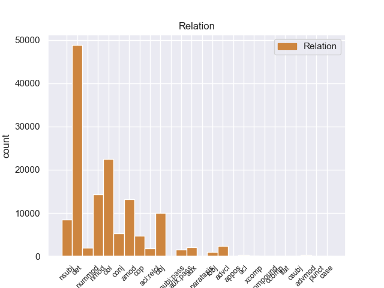
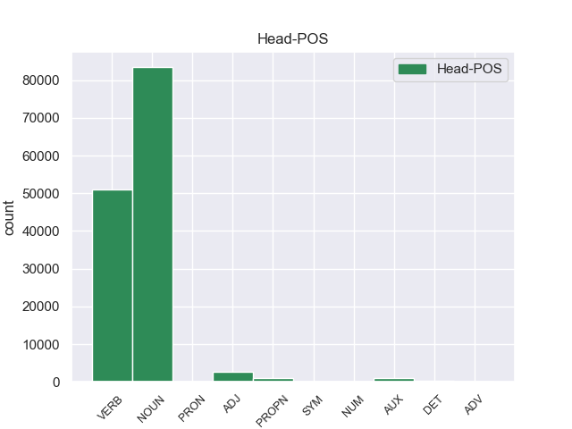
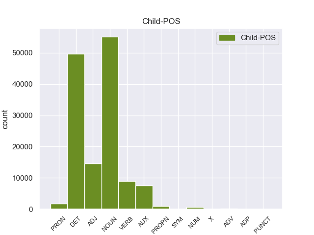

Distribution of features within this leaf



Agreement Rules sorted by frequency.
- When the dependent token is the determiner(det) of the head token, and the head token is NOUN
1 En _ _ _ _ 0 _ _ _
2 1991 _ _ _ _ 0 _ _ _
3 , _ _ _ _ 0 _ _ _
4 como _ _ _ _ 0 _ _ _
5 ya _ _ _ _ 0 _ _ _
6 está _ _ _ _ 0 _ _ _
7 indicado _ _ _ _ 0 _ _ _
8 en _ _ _ _ 0 _ _ _
9 el _ _ _ _ 0 _ _ _
10 párrafo _ _ _ _ 0 _ _ _
11 anterior _ _ _ _ 0 _ _ _
12 , _ _ _ _ 0 _ _ _
13 se _ _ _ _ 0 _ _ _
14 creó _ _ _ _ 0 _ _ _
15 un _ _ _ _ 0 _ _ _
16 equipo _ _ _ _ 0 _ _ _
17 ad _ _ _ _ 0 _ _ _
18 hoc _ _ _ _ 0 _ _ _
19 para _ _ _ _ 0 _ _ _
20 averiguar _ _ _ _ 0 _ _ _
21 como _ _ _ _ 0 _ _ _
22 se _ _ _ _ 0 _ _ _
23 podía _ _ _ _ 0 _ _ _
24 desarrollar _ _ _ _ 0 _ _ _
25 el _ _ _ _ 0 _ _ _
26 Dialogo _ _ _ _ 0 _ _ _
27 Social _ _ _ _ 0 _ _ _
28 , _ _ _ _ 0 _ _ _
29 este _ _ _ _ 0 _ _ _
30 equipo _ _ _ _ 0 _ _ _
31 estaba _ _ _ _ 0 _ _ _
32 formado _ _ _ _ 0 _ _ _
33 por _ _ _ _ 0 _ _ _
34 representantes _ _ _ _ 0 _ _ _
35 de _ _ _ _ 0 _ _ _
36 todas _ _ _ _ 0 _ _ _
37 las el DET _ Definite=Def|Gender=Fem|Number=Plur|PronType=Art 38 det _ _
38 organizaciones organizacione NOUN _ Gender=Fem|Number=Plur 0 _ _ _
39 relacionadas _ _ _ _ 0 _ _ _
40 con _ _ _ _ 0 _ _ _
41 CES _ _ _ _ 0 _ _ _
42 , _ _ _ _ 0 _ _ _
43 UNICE _ _ _ _ 0 _ _ _
44 y _ _ _ _ 0 _ _ _
45 CEEP _ _ _ _ 0 _ _ _
46 ; _ _ _ _ 0 _ _ _
1 En _ _ _ _ 0 _ _ _
2 1991 _ _ _ _ 0 _ _ _
3 , _ _ _ _ 0 _ _ _
4 como _ _ _ _ 0 _ _ _
5 ya _ _ _ _ 0 _ _ _
6 está _ _ _ _ 0 _ _ _
7 indicado _ _ _ _ 0 _ _ _
8 en _ _ _ _ 0 _ _ _
9 el _ _ _ _ 0 _ _ _
10 párrafo _ _ _ _ 0 _ _ _
11 anterior _ _ _ _ 0 _ _ _
12 , _ _ _ _ 0 _ _ _
13 se _ _ _ _ 0 _ _ _
14 creó crear VERB _ Mood=Ind|Number=Sing|Person=3|Tense=Past|VerbForm=Fin 0 _ _ _
15 un _ _ _ _ 0 _ _ _
16 equipo _ _ _ _ 0 _ _ _
17 ad _ _ _ _ 0 _ _ _
18 hoc _ _ _ _ 0 _ _ _
19 para _ _ _ _ 0 _ _ _
20 averiguar _ _ _ _ 0 _ _ _
21 como _ _ _ _ 0 _ _ _
22 se _ _ _ _ 0 _ _ _
23 podía _ _ _ _ 0 _ _ _
24 desarrollar _ _ _ _ 0 _ _ _
25 el _ _ _ _ 0 _ _ _
26 Dialogo dialogo NOUN _ Gender=Masc|Number=Sing 14 obl _ _
27 Social _ _ _ _ 0 _ _ _
28 , _ _ _ _ 0 _ _ _
29 este _ _ _ _ 0 _ _ _
30 equipo _ _ _ _ 0 _ _ _
31 estaba _ _ _ _ 0 _ _ _
32 formado _ _ _ _ 0 _ _ _
33 por _ _ _ _ 0 _ _ _
34 representantes _ _ _ _ 0 _ _ _
35 de _ _ _ _ 0 _ _ _
36 todas _ _ _ _ 0 _ _ _
37 las _ _ _ _ 0 _ _ _
38 organizaciones _ _ _ _ 0 _ _ _
39 relacionadas _ _ _ _ 0 _ _ _
40 con _ _ _ _ 0 _ _ _
41 CES _ _ _ _ 0 _ _ _
42 , _ _ _ _ 0 _ _ _
43 UNICE _ _ _ _ 0 _ _ _
44 y _ _ _ _ 0 _ _ _
45 CEEP _ _ _ _ 0 _ _ _
46 ; _ _ _ _ 0 _ _ _
1 En _ _ _ _ 0 _ _ _
2 1991 _ _ _ _ 0 _ _ _
3 , _ _ _ _ 0 _ _ _
4 como _ _ _ _ 0 _ _ _
5 ya _ _ _ _ 0 _ _ _
6 está _ _ _ _ 0 _ _ _
7 indicado _ _ _ _ 0 _ _ _
8 en _ _ _ _ 0 _ _ _
9 el _ _ _ _ 0 _ _ _
10 párrafo _ _ _ _ 0 _ _ _
11 anterior _ _ _ _ 0 _ _ _
12 , _ _ _ _ 0 _ _ _
13 se _ _ _ _ 0 _ _ _
14 creó _ _ _ _ 0 _ _ _
15 un _ _ _ _ 0 _ _ _
16 equipo equipo NOUN _ Gender=Masc|Number=Sing 0 _ _ _
17 ad _ _ _ _ 0 _ _ _
18 hoc hoc ADJ _ Gender=Masc|Number=Sing 16 amod _ _
19 para _ _ _ _ 0 _ _ _
20 averiguar _ _ _ _ 0 _ _ _
21 como _ _ _ _ 0 _ _ _
22 se _ _ _ _ 0 _ _ _
23 podía _ _ _ _ 0 _ _ _
24 desarrollar _ _ _ _ 0 _ _ _
25 el _ _ _ _ 0 _ _ _
26 Dialogo _ _ _ _ 0 _ _ _
27 Social _ _ _ _ 0 _ _ _
28 , _ _ _ _ 0 _ _ _
29 este _ _ _ _ 0 _ _ _
30 equipo _ _ _ _ 0 _ _ _
31 estaba _ _ _ _ 0 _ _ _
32 formado _ _ _ _ 0 _ _ _
33 por _ _ _ _ 0 _ _ _
34 representantes _ _ _ _ 0 _ _ _
35 de _ _ _ _ 0 _ _ _
36 todas _ _ _ _ 0 _ _ _
37 las _ _ _ _ 0 _ _ _
38 organizaciones _ _ _ _ 0 _ _ _
39 relacionadas _ _ _ _ 0 _ _ _
40 con _ _ _ _ 0 _ _ _
41 CES _ _ _ _ 0 _ _ _
42 , _ _ _ _ 0 _ _ _
43 UNICE _ _ _ _ 0 _ _ _
44 y _ _ _ _ 0 _ _ _
45 CEEP _ _ _ _ 0 _ _ _
46 ; _ _ _ _ 0 _ _ _
1 Esta _ _ _ _ 0 _ _ _
2 teoría _ _ _ _ 0 _ _ _
3 se _ _ _ _ 0 _ _ _
4 avenía _ _ _ _ 0 _ _ _
5 bien _ _ _ _ 0 _ _ _
6 con _ _ _ _ 0 _ _ _
7 la _ _ _ _ 0 _ _ _
8 creencia _ _ _ _ 0 _ _ _
9 de _ _ _ _ 0 _ _ _
10 el _ _ _ _ 0 _ _ _
11 Romanticismo _ _ _ _ 0 _ _ _
12 en _ _ _ _ 0 _ _ _
13 un _ _ _ _ 0 _ _ _
14 volkgeist _ _ _ _ 0 _ _ _
15 , _ _ _ _ 0 _ _ _
16 " _ _ _ _ 0 _ _ _
17 genio _ _ _ _ 0 _ _ _
18 o _ _ _ _ 0 _ _ _
19 espíritu _ _ _ _ 0 _ _ _
20 de _ _ _ _ 0 _ _ _
21 el _ _ _ _ 0 _ _ _
22 pueblo _ _ _ _ 0 _ _ _
23 " _ _ _ _ 0 _ _ _
24 , _ _ _ _ 0 _ _ _
25 autor autor NOUN _ Gender=Masc|Number=Sing 0 _ _ _
26 colectivo _ _ _ _ 0 _ _ _
27 y _ _ _ _ 0 _ _ _
28 anónimo _ _ _ _ 0 _ _ _
29 de _ _ _ _ 0 _ _ _
30 una _ _ _ _ 0 _ _ _
31 poesía poesía NOUN _ Gender=Fem|Number=Sing 25 nmod _ _
32 nacional _ _ _ _ 0 _ _ _
33 . _ _ _ _ 0 _ _ _
1 En _ _ _ _ 0 _ _ _
2 1991 _ _ _ _ 0 _ _ _
3 , _ _ _ _ 0 _ _ _
4 como _ _ _ _ 0 _ _ _
5 ya _ _ _ _ 0 _ _ _
6 está _ _ _ _ 0 _ _ _
7 indicado _ _ _ _ 0 _ _ _
8 en _ _ _ _ 0 _ _ _
9 el _ _ _ _ 0 _ _ _
10 párrafo _ _ _ _ 0 _ _ _
11 anterior _ _ _ _ 0 _ _ _
12 , _ _ _ _ 0 _ _ _
13 se _ _ _ _ 0 _ _ _
14 creó crear VERB _ Mood=Ind|Number=Sing|Person=3|Tense=Past|VerbForm=Fin 0 _ _ _
15 un _ _ _ _ 0 _ _ _
16 equipo equipo NOUN _ Gender=Masc|Number=Sing 14 obj _ _
17 ad _ _ _ _ 0 _ _ _
18 hoc _ _ _ _ 0 _ _ _
19 para _ _ _ _ 0 _ _ _
20 averiguar _ _ _ _ 0 _ _ _
21 como _ _ _ _ 0 _ _ _
22 se _ _ _ _ 0 _ _ _
23 podía _ _ _ _ 0 _ _ _
24 desarrollar _ _ _ _ 0 _ _ _
25 el _ _ _ _ 0 _ _ _
26 Dialogo _ _ _ _ 0 _ _ _
27 Social _ _ _ _ 0 _ _ _
28 , _ _ _ _ 0 _ _ _
29 este _ _ _ _ 0 _ _ _
30 equipo _ _ _ _ 0 _ _ _
31 estaba _ _ _ _ 0 _ _ _
32 formado _ _ _ _ 0 _ _ _
33 por _ _ _ _ 0 _ _ _
34 representantes _ _ _ _ 0 _ _ _
35 de _ _ _ _ 0 _ _ _
36 todas _ _ _ _ 0 _ _ _
37 las _ _ _ _ 0 _ _ _
38 organizaciones _ _ _ _ 0 _ _ _
39 relacionadas _ _ _ _ 0 _ _ _
40 con _ _ _ _ 0 _ _ _
41 CES _ _ _ _ 0 _ _ _
42 , _ _ _ _ 0 _ _ _
43 UNICE _ _ _ _ 0 _ _ _
44 y _ _ _ _ 0 _ _ _
45 CEEP _ _ _ _ 0 _ _ _
46 ; _ _ _ _ 0 _ _ _
1 En _ _ _ _ 0 _ _ _
2 1991 _ _ _ _ 0 _ _ _
3 , _ _ _ _ 0 _ _ _
4 como _ _ _ _ 0 _ _ _
5 ya _ _ _ _ 0 _ _ _
6 está _ _ _ _ 0 _ _ _
7 indicado _ _ _ _ 0 _ _ _
8 en _ _ _ _ 0 _ _ _
9 el _ _ _ _ 0 _ _ _
10 párrafo _ _ _ _ 0 _ _ _
11 anterior _ _ _ _ 0 _ _ _
12 , _ _ _ _ 0 _ _ _
13 se _ _ _ _ 0 _ _ _
14 creó crear VERB _ Mood=Ind|Number=Sing|Person=3|Tense=Past|VerbForm=Fin 0 _ _ _
15 un _ _ _ _ 0 _ _ _
16 equipo _ _ _ _ 0 _ _ _
17 ad _ _ _ _ 0 _ _ _
18 hoc _ _ _ _ 0 _ _ _
19 para _ _ _ _ 0 _ _ _
20 averiguar _ _ _ _ 0 _ _ _
21 como _ _ _ _ 0 _ _ _
22 se _ _ _ _ 0 _ _ _
23 podía _ _ _ _ 0 _ _ _
24 desarrollar _ _ _ _ 0 _ _ _
25 el _ _ _ _ 0 _ _ _
26 Dialogo _ _ _ _ 0 _ _ _
27 Social _ _ _ _ 0 _ _ _
28 , _ _ _ _ 0 _ _ _
29 este _ _ _ _ 0 _ _ _
30 equipo equipo NOUN _ Gender=Masc|Number=Sing 14 nsubj _ _
31 estaba _ _ _ _ 0 _ _ _
32 formado _ _ _ _ 0 _ _ _
33 por _ _ _ _ 0 _ _ _
34 representantes _ _ _ _ 0 _ _ _
35 de _ _ _ _ 0 _ _ _
36 todas _ _ _ _ 0 _ _ _
37 las _ _ _ _ 0 _ _ _
38 organizaciones _ _ _ _ 0 _ _ _
39 relacionadas _ _ _ _ 0 _ _ _
40 con _ _ _ _ 0 _ _ _
41 CES _ _ _ _ 0 _ _ _
42 , _ _ _ _ 0 _ _ _
43 UNICE _ _ _ _ 0 _ _ _
44 y _ _ _ _ 0 _ _ _
45 CEEP _ _ _ _ 0 _ _ _
46 ; _ _ _ _ 0 _ _ _
1 En _ _ _ _ 0 _ _ _
2 1991 _ _ _ _ 0 _ _ _
3 , _ _ _ _ 0 _ _ _
4 como _ _ _ _ 0 _ _ _
5 ya _ _ _ _ 0 _ _ _
6 está _ _ _ _ 0 _ _ _
7 indicado _ _ _ _ 0 _ _ _
8 en _ _ _ _ 0 _ _ _
9 el _ _ _ _ 0 _ _ _
10 párrafo _ _ _ _ 0 _ _ _
11 anterior _ _ _ _ 0 _ _ _
12 , _ _ _ _ 0 _ _ _
13 se _ _ _ _ 0 _ _ _
14 creó crear VERB _ Mood=Ind|Number=Sing|Person=3|Tense=Past|VerbForm=Fin 0 _ _ _
15 un _ _ _ _ 0 _ _ _
16 equipo _ _ _ _ 0 _ _ _
17 ad _ _ _ _ 0 _ _ _
18 hoc _ _ _ _ 0 _ _ _
19 para _ _ _ _ 0 _ _ _
20 averiguar _ _ _ _ 0 _ _ _
21 como _ _ _ _ 0 _ _ _
22 se _ _ _ _ 0 _ _ _
23 podía _ _ _ _ 0 _ _ _
24 desarrollar _ _ _ _ 0 _ _ _
25 el _ _ _ _ 0 _ _ _
26 Dialogo _ _ _ _ 0 _ _ _
27 Social _ _ _ _ 0 _ _ _
28 , _ _ _ _ 0 _ _ _
29 este _ _ _ _ 0 _ _ _
30 equipo _ _ _ _ 0 _ _ _
31 estaba _ _ _ _ 0 _ _ _
32 formado formado VERB _ Gender=Masc|Number=Sing|Tense=Past|VerbForm=Part 14 conj _ _
33 por _ _ _ _ 0 _ _ _
34 representantes _ _ _ _ 0 _ _ _
35 de _ _ _ _ 0 _ _ _
36 todas _ _ _ _ 0 _ _ _
37 las _ _ _ _ 0 _ _ _
38 organizaciones _ _ _ _ 0 _ _ _
39 relacionadas _ _ _ _ 0 _ _ _
40 con _ _ _ _ 0 _ _ _
41 CES _ _ _ _ 0 _ _ _
42 , _ _ _ _ 0 _ _ _
43 UNICE _ _ _ _ 0 _ _ _
44 y _ _ _ _ 0 _ _ _
45 CEEP _ _ _ _ 0 _ _ _
46 ; _ _ _ _ 0 _ _ _
1 San _ _ _ _ 0 _ _ _
2 Julián _ _ _ _ 0 _ _ _
3 de _ _ _ _ 0 _ _ _
4 Morcelle _ _ _ _ 0 _ _ _
5 ( _ _ _ _ 0 _ _ _
6 en _ _ _ _ 0 _ _ _
7 gallego _ _ _ _ 0 _ _ _
8 : _ _ _ _ 0 _ _ _
9 San _ _ _ _ 0 _ _ _
10 Xulián _ _ _ _ 0 _ _ _
11 de _ _ _ _ 0 _ _ _
12 Morcelle _ _ _ _ 0 _ _ _
13 ) _ _ _ _ 0 _ _ _
14 o _ _ _ _ 0 _ _ _
15 simplemente _ _ _ _ 0 _ _ _
16 Morcelle _ _ _ _ 0 _ _ _
17 , _ _ _ _ 0 _ _ _
18 es ser AUX _ Mood=Ind|Number=Sing|Person=3|Tense=Pres|VerbForm=Fin 20 cop _ _
19 una _ _ _ _ 0 _ _ _
20 parroquia parroquia NOUN _ Gender=Fem|Number=Sing 0 _ _ _
21 perteneciente _ _ _ _ 0 _ _ _
22 a _ _ _ _ 0 _ _ _
23 el _ _ _ _ 0 _ _ _
24 municipio _ _ _ _ 0 _ _ _
25 de _ _ _ _ 0 _ _ _
26 Becerreá _ _ _ _ 0 _ _ _
27 , _ _ _ _ 0 _ _ _
28 en _ _ _ _ 0 _ _ _
29 la _ _ _ _ 0 _ _ _
30 provincia _ _ _ _ 0 _ _ _
31 de _ _ _ _ 0 _ _ _
32 Lugo _ _ _ _ 0 _ _ _
33 , _ _ _ _ 0 _ _ _
34 Galicia _ _ _ _ 0 _ _ _
35 ( _ _ _ _ 0 _ _ _
36 España _ _ _ _ 0 _ _ _
37 ) _ _ _ _ 0 _ _ _
38 . _ _ _ _ 0 _ _ _
1 Para _ _ _ _ 0 _ _ _
2 poder _ _ _ _ 0 _ _ _
3 estudiar _ _ _ _ 0 _ _ _
4 los _ _ _ _ 0 _ _ _
5 mejor _ _ _ _ 0 _ _ _
6 , _ _ _ _ 0 _ _ _
7 Ghazali _ _ _ _ 0 _ _ _
8 introdujo _ _ _ _ 0 _ _ _
9 varios _ _ _ _ 0 _ _ _
10 peces _ _ _ _ 0 _ _ _
11 en _ _ _ _ 0 _ _ _
12 un _ _ _ _ 0 _ _ _
13 tanque _ _ _ _ 0 _ _ _
14 y _ _ _ _ 0 _ _ _
15 , _ _ _ _ 0 _ _ _
16 tras _ _ _ _ 0 _ _ _
17 varias _ _ _ _ 0 _ _ _
18 semanas _ _ _ _ 0 _ _ _
19 de _ _ _ _ 0 _ _ _
20 aclimatación _ _ _ _ 0 _ _ _
21 , _ _ _ _ 0 _ _ _
22 comenzó comenzar VERB _ Mood=Ind|Number=Sing|Person=3|Tense=Past|VerbForm=Fin 0 _ _ _
23 a _ _ _ _ 0 _ _ _
24 grabar _ _ _ _ 0 _ _ _
25 sus _ _ _ _ 0 _ _ _
26 sonidos _ _ _ _ 0 _ _ _
27 , _ _ _ _ 0 _ _ _
28 según _ _ _ _ 0 _ _ _
29 recoge recoge VERB _ Mood=Ind|Number=Sing|Person=3|Tense=Past|VerbForm=Fin 22 advcl _ _
30 el _ _ _ _ 0 _ _ _
31 periódico _ _ _ _ 0 _ _ _
32 New _ _ _ _ 0 _ _ _
33 Zealand _ _ _ _ 0 _ _ _
34 Herald _ _ _ _ 0 _ _ _
35 . _ _ _ _ 0 _ _ _
1 De _ _ _ _ 0 _ _ _
2 los _ _ _ _ 0 _ _ _
3 714 _ _ _ _ 0 _ _ _
4 habitantes _ _ _ _ 0 _ _ _
5 , _ _ _ _ 0 _ _ _
6 el _ _ _ _ 0 _ _ _
7 municipio _ _ _ _ 0 _ _ _
8 de _ _ _ _ 0 _ _ _
9 Daggett _ _ _ _ 0 _ _ _
10 estaba _ _ _ _ 0 _ _ _
11 compuesto _ _ _ _ 0 _ _ _
12 por _ _ _ _ 0 _ _ _
13 el _ _ _ _ 0 _ _ _
14 93.28 _ _ _ _ 0 _ _ _
15 % _ _ _ _ 0 _ _ _
16 blancos _ _ _ _ 0 _ _ _
17 , _ _ _ _ 0 _ _ _
18 el _ _ _ _ 0 _ _ _
19 2.38 _ _ _ _ 0 _ _ _
20 % _ _ _ _ 0 _ _ _
21 eran _ _ _ _ 0 _ _ _
22 afroamericanos _ _ _ _ 0 _ _ _
23 , _ _ _ _ 0 _ _ _
24 el _ _ _ _ 0 _ _ _
25 0.84 _ _ _ _ 0 _ _ _
26 % _ _ _ _ 0 _ _ _
27 eran _ _ _ _ 0 _ _ _
28 amerindios _ _ _ _ 0 _ _ _
29 , _ _ _ _ 0 _ _ _
30 el _ _ _ _ 0 _ _ _
31 0.56 _ _ _ _ 0 _ _ _
32 % _ _ _ _ 0 _ _ _
33 eran _ _ _ _ 0 _ _ _
34 asiáticos _ _ _ _ 0 _ _ _
35 , _ _ _ _ 0 _ _ _
36 el _ _ _ _ 0 _ _ _
37 0 _ _ _ _ 0 _ _ _
38 % _ _ _ _ 0 _ _ _
39 eran _ _ _ _ 0 _ _ _
40 isleños _ _ _ _ 0 _ _ _
41 de _ _ _ _ 0 _ _ _
42 el _ _ _ _ 0 _ _ _
43 Pacífico _ _ _ _ 0 _ _ _
44 , _ _ _ _ 0 _ _ _
45 el _ _ _ _ 0 _ _ _
46 0.84 _ _ _ _ 0 _ _ _
47 % _ _ _ _ 0 _ _ _
48 eran _ _ _ _ 0 _ _ _
49 de _ _ _ _ 0 _ _ _
50 otras _ _ _ _ 0 _ _ _
51 razas _ _ _ _ 0 _ _ _
52 y _ _ _ _ 0 _ _ _
53 el _ _ _ _ 0 _ _ _
54 2.1 _ _ _ _ 0 _ _ _
55 % _ _ _ _ 0 _ _ _
56 pertenecían _ _ _ _ 0 _ _ _
57 a _ _ _ _ 0 _ _ _
58 dos dos NUM _ Number=Plur|NumType=Card 61 nummod _ _
59 o _ _ _ _ 0 _ _ _
60 más _ _ _ _ 0 _ _ _
61 razas raza NOUN _ Gender=Masc|Number=Plur 0 _ _ _
62 . _ _ _ _ 0 _ _ _
1 Esta _ _ _ _ 0 _ _ _
2 teoría _ _ _ _ 0 _ _ _
3 se _ _ _ _ 0 _ _ _
4 avenía _ _ _ _ 0 _ _ _
5 bien _ _ _ _ 0 _ _ _
6 con _ _ _ _ 0 _ _ _
7 la _ _ _ _ 0 _ _ _
8 creencia _ _ _ _ 0 _ _ _
9 de _ _ _ _ 0 _ _ _
10 el _ _ _ _ 0 _ _ _
11 Romanticismo _ _ _ _ 0 _ _ _
12 en _ _ _ _ 0 _ _ _
13 un _ _ _ _ 0 _ _ _
14 volkgeist _ _ _ _ 0 _ _ _
15 , _ _ _ _ 0 _ _ _
16 " _ _ _ _ 0 _ _ _
17 genio _ _ _ _ 0 _ _ _
18 o _ _ _ _ 0 _ _ _
19 espíritu _ _ _ _ 0 _ _ _
20 de _ _ _ _ 0 _ _ _
21 el _ _ _ _ 0 _ _ _
22 pueblo _ _ _ _ 0 _ _ _
23 " _ _ _ _ 0 _ _ _
24 , _ _ _ _ 0 _ _ _
25 autor autor NOUN _ Gender=Masc|Number=Sing 0 _ _ _
26 colectivo _ _ _ _ 0 _ _ _
27 y _ _ _ _ 0 _ _ _
28 anónimo anónimo ADJ _ Gender=Masc|Number=Sing 25 conj _ _
29 de _ _ _ _ 0 _ _ _
30 una _ _ _ _ 0 _ _ _
31 poesía _ _ _ _ 0 _ _ _
32 nacional _ _ _ _ 0 _ _ _
33 . _ _ _ _ 0 _ _ _
1 En _ _ _ _ 0 _ _ _
2 1991 _ _ _ _ 0 _ _ _
3 , _ _ _ _ 0 _ _ _
4 como _ _ _ _ 0 _ _ _
5 ya _ _ _ _ 0 _ _ _
6 está _ _ _ _ 0 _ _ _
7 indicado _ _ _ _ 0 _ _ _
8 en _ _ _ _ 0 _ _ _
9 el _ _ _ _ 0 _ _ _
10 párrafo _ _ _ _ 0 _ _ _
11 anterior _ _ _ _ 0 _ _ _
12 , _ _ _ _ 0 _ _ _
13 se _ _ _ _ 0 _ _ _
14 creó _ _ _ _ 0 _ _ _
15 un _ _ _ _ 0 _ _ _
16 equipo _ _ _ _ 0 _ _ _
17 ad _ _ _ _ 0 _ _ _
18 hoc _ _ _ _ 0 _ _ _
19 para _ _ _ _ 0 _ _ _
20 averiguar _ _ _ _ 0 _ _ _
21 como _ _ _ _ 0 _ _ _
22 se _ _ _ _ 0 _ _ _
23 podía _ _ _ _ 0 _ _ _
24 desarrollar _ _ _ _ 0 _ _ _
25 el _ _ _ _ 0 _ _ _
26 Dialogo _ _ _ _ 0 _ _ _
27 Social _ _ _ _ 0 _ _ _
28 , _ _ _ _ 0 _ _ _
29 este _ _ _ _ 0 _ _ _
30 equipo _ _ _ _ 0 _ _ _
31 estaba sestab AUX _ Mood=Ind|Number=Sing|Person=3|Tense=Imp|VerbForm=Fin 32 aux:pass _ _
32 formado formado VERB _ Gender=Masc|Number=Sing|Tense=Past|VerbForm=Part 0 _ _ _
33 por _ _ _ _ 0 _ _ _
34 representantes _ _ _ _ 0 _ _ _
35 de _ _ _ _ 0 _ _ _
36 todas _ _ _ _ 0 _ _ _
37 las _ _ _ _ 0 _ _ _
38 organizaciones _ _ _ _ 0 _ _ _
39 relacionadas _ _ _ _ 0 _ _ _
40 con _ _ _ _ 0 _ _ _
41 CES _ _ _ _ 0 _ _ _
42 , _ _ _ _ 0 _ _ _
43 UNICE _ _ _ _ 0 _ _ _
44 y _ _ _ _ 0 _ _ _
45 CEEP _ _ _ _ 0 _ _ _
46 ; _ _ _ _ 0 _ _ _
1 En _ _ _ _ 0 _ _ _
2 1991 _ _ _ _ 0 _ _ _
3 , _ _ _ _ 0 _ _ _
4 como _ _ _ _ 0 _ _ _
5 ya _ _ _ _ 0 _ _ _
6 está _ _ _ _ 0 _ _ _
7 indicado indicado VERB _ Gender=Masc|Number=Sing|Tense=Past|VerbForm=Part 16 acl:relcl _ _
8 en _ _ _ _ 0 _ _ _
9 el _ _ _ _ 0 _ _ _
10 párrafo _ _ _ _ 0 _ _ _
11 anterior _ _ _ _ 0 _ _ _
12 , _ _ _ _ 0 _ _ _
13 se _ _ _ _ 0 _ _ _
14 creó _ _ _ _ 0 _ _ _
15 un _ _ _ _ 0 _ _ _
16 equipo equipo NOUN _ Gender=Masc|Number=Sing 0 _ _ _
17 ad _ _ _ _ 0 _ _ _
18 hoc _ _ _ _ 0 _ _ _
19 para _ _ _ _ 0 _ _ _
20 averiguar _ _ _ _ 0 _ _ _
21 como _ _ _ _ 0 _ _ _
22 se _ _ _ _ 0 _ _ _
23 podía _ _ _ _ 0 _ _ _
24 desarrollar _ _ _ _ 0 _ _ _
25 el _ _ _ _ 0 _ _ _
26 Dialogo _ _ _ _ 0 _ _ _
27 Social _ _ _ _ 0 _ _ _
28 , _ _ _ _ 0 _ _ _
29 este _ _ _ _ 0 _ _ _
30 equipo _ _ _ _ 0 _ _ _
31 estaba _ _ _ _ 0 _ _ _
32 formado _ _ _ _ 0 _ _ _
33 por _ _ _ _ 0 _ _ _
34 representantes _ _ _ _ 0 _ _ _
35 de _ _ _ _ 0 _ _ _
36 todas _ _ _ _ 0 _ _ _
37 las _ _ _ _ 0 _ _ _
38 organizaciones _ _ _ _ 0 _ _ _
39 relacionadas _ _ _ _ 0 _ _ _
40 con _ _ _ _ 0 _ _ _
41 CES _ _ _ _ 0 _ _ _
42 , _ _ _ _ 0 _ _ _
43 UNICE _ _ _ _ 0 _ _ _
44 y _ _ _ _ 0 _ _ _
45 CEEP _ _ _ _ 0 _ _ _
46 ; _ _ _ _ 0 _ _ _
1 En _ _ _ _ 0 _ _ _
2 1991 _ _ _ _ 0 _ _ _
3 , _ _ _ _ 0 _ _ _
4 como _ _ _ _ 0 _ _ _
5 ya _ _ _ _ 0 _ _ _
6 está stár AUX _ Mood=Ind|Number=Sing|Person=3|Tense=Pres|VerbForm=Fin 7 aux _ _
7 indicado indicado VERB _ Gender=Masc|Number=Sing|Tense=Past|VerbForm=Part 0 _ _ _
8 en _ _ _ _ 0 _ _ _
9 el _ _ _ _ 0 _ _ _
10 párrafo _ _ _ _ 0 _ _ _
11 anterior _ _ _ _ 0 _ _ _
12 , _ _ _ _ 0 _ _ _
13 se _ _ _ _ 0 _ _ _
14 creó _ _ _ _ 0 _ _ _
15 un _ _ _ _ 0 _ _ _
16 equipo _ _ _ _ 0 _ _ _
17 ad _ _ _ _ 0 _ _ _
18 hoc _ _ _ _ 0 _ _ _
19 para _ _ _ _ 0 _ _ _
20 averiguar _ _ _ _ 0 _ _ _
21 como _ _ _ _ 0 _ _ _
22 se _ _ _ _ 0 _ _ _
23 podía _ _ _ _ 0 _ _ _
24 desarrollar _ _ _ _ 0 _ _ _
25 el _ _ _ _ 0 _ _ _
26 Dialogo _ _ _ _ 0 _ _ _
27 Social _ _ _ _ 0 _ _ _
28 , _ _ _ _ 0 _ _ _
29 este _ _ _ _ 0 _ _ _
30 equipo _ _ _ _ 0 _ _ _
31 estaba _ _ _ _ 0 _ _ _
32 formado _ _ _ _ 0 _ _ _
33 por _ _ _ _ 0 _ _ _
34 representantes _ _ _ _ 0 _ _ _
35 de _ _ _ _ 0 _ _ _
36 todas _ _ _ _ 0 _ _ _
37 las _ _ _ _ 0 _ _ _
38 organizaciones _ _ _ _ 0 _ _ _
39 relacionadas _ _ _ _ 0 _ _ _
40 con _ _ _ _ 0 _ _ _
41 CES _ _ _ _ 0 _ _ _
42 , _ _ _ _ 0 _ _ _
43 UNICE _ _ _ _ 0 _ _ _
44 y _ _ _ _ 0 _ _ _
45 CEEP _ _ _ _ 0 _ _ _
46 ; _ _ _ _ 0 _ _ _
1 Esta _ _ _ _ 0 _ _ _
2 teoría _ _ _ _ 0 _ _ _
3 se _ _ _ _ 0 _ _ _
4 avenía _ _ _ _ 0 _ _ _
5 bien _ _ _ _ 0 _ _ _
6 con _ _ _ _ 0 _ _ _
7 la _ _ _ _ 0 _ _ _
8 creencia _ _ _ _ 0 _ _ _
9 de _ _ _ _ 0 _ _ _
10 el el DET _ Definite=Def|Gender=Masc|Number=Sing|PronType=Art 11 det _ _
11 Romanticismo romanticismo PROPN _ Gender=Masc|Number=Sing 0 _ _ _
12 en _ _ _ _ 0 _ _ _
13 un _ _ _ _ 0 _ _ _
14 volkgeist _ _ _ _ 0 _ _ _
15 , _ _ _ _ 0 _ _ _
16 " _ _ _ _ 0 _ _ _
17 genio _ _ _ _ 0 _ _ _
18 o _ _ _ _ 0 _ _ _
19 espíritu _ _ _ _ 0 _ _ _
20 de _ _ _ _ 0 _ _ _
21 el _ _ _ _ 0 _ _ _
22 pueblo _ _ _ _ 0 _ _ _
23 " _ _ _ _ 0 _ _ _
24 , _ _ _ _ 0 _ _ _
25 autor _ _ _ _ 0 _ _ _
26 colectivo _ _ _ _ 0 _ _ _
27 y _ _ _ _ 0 _ _ _
28 anónimo _ _ _ _ 0 _ _ _
29 de _ _ _ _ 0 _ _ _
30 una _ _ _ _ 0 _ _ _
31 poesía _ _ _ _ 0 _ _ _
32 nacional _ _ _ _ 0 _ _ _
33 . _ _ _ _ 0 _ _ _
1 Jazmin _ _ _ _ 0 _ _ _
2 es _ _ _ _ 0 _ _ _
3 todo _ _ _ _ 0 _ _ _
4 lo _ _ _ _ 0 _ _ _
5 contrario _ _ _ _ 0 _ _ _
6 , _ _ _ _ 0 _ _ _
7 es ser AUX _ Mood=Ind|Number=Sing|Person=3|Tense=Pres|VerbForm=Fin 8 cop _ _
8 tímida tímida ADJ _ Gender=Fem|Number=Sing 0 _ _ _
9 y _ _ _ _ 0 _ _ _
10 callada _ _ _ _ 0 _ _ _
11 , _ _ _ _ 0 _ _ _
12 pero _ _ _ _ 0 _ _ _
13 siempre _ _ _ _ 0 _ _ _
14 es _ _ _ _ 0 _ _ _
15 arrastrada _ _ _ _ 0 _ _ _
16 por _ _ _ _ 0 _ _ _
17 las _ _ _ _ 0 _ _ _
18 locuras _ _ _ _ 0 _ _ _
19 y _ _ _ _ 0 _ _ _
20 travesuras _ _ _ _ 0 _ _ _
21 que _ _ _ _ 0 _ _ _
22 inventa _ _ _ _ 0 _ _ _
23 Alma _ _ _ _ 0 _ _ _
24 . _ _ _ _ 0 _ _ _
1 De _ _ _ _ 0 _ _ _
2 la _ _ _ _ 0 _ _ _
3 Vega _ _ _ _ 0 _ _ _
4 ha _ _ _ _ 0 _ _ _
5 pedido _ _ _ _ 0 _ _ _
6 respetar _ _ _ _ 0 _ _ _
7 los _ _ _ _ 0 _ _ _
8 tiempos _ _ _ _ 0 _ _ _
9 de _ _ _ _ 0 _ _ _
10 los _ _ _ _ 0 _ _ _
11 procesos _ _ _ _ 0 _ _ _
12 y _ _ _ _ 0 _ _ _
13 de _ _ _ _ 0 _ _ _
14 la _ _ _ _ 0 _ _ _
15 misma _ _ _ _ 0 _ _ _
16 manera _ _ _ _ 0 _ _ _
17 que _ _ _ _ 0 _ _ _
18 no _ _ _ _ 0 _ _ _
19 ha _ _ _ _ 0 _ _ _
20 querido _ _ _ _ 0 _ _ _
21 entrar _ _ _ _ 0 _ _ _
22 en _ _ _ _ 0 _ _ _
23 la _ _ _ _ 0 _ _ _
24 salida _ _ _ _ 0 _ _ _
25 de _ _ _ _ 0 _ _ _
26 Corbacho _ _ _ _ 0 _ _ _
27 , _ _ _ _ 0 _ _ _
28 tampoco _ _ _ _ 0 _ _ _
29 lo él PRON _ Case=Acc|Gender=Masc|Number=Sing|Person=3|PrepCase=Npr|PronType=Prs 31 iobj _ _
30 ha _ _ _ _ 0 _ _ _
31 hecho hecho VERB _ Gender=Masc|Number=Sing|Tense=Past|VerbForm=Part 0 _ _ _
32 la _ _ _ _ 0 _ _ _
33 posible _ _ _ _ 0 _ _ _
34 salida _ _ _ _ 0 _ _ _
35 de _ _ _ _ 0 _ _ _
36 Trinidad _ _ _ _ 0 _ _ _
37 Jiménez _ _ _ _ 0 _ _ _
38 , _ _ _ _ 0 _ _ _
39 que _ _ _ _ 0 _ _ _
40 le _ _ _ _ 0 _ _ _
41 acompañaba _ _ _ _ 0 _ _ _
42 en _ _ _ _ 0 _ _ _
43 la _ _ _ _ 0 _ _ _
44 sala _ _ _ _ 0 _ _ _
45 de _ _ _ _ 0 _ _ _
46 prensa _ _ _ _ 0 _ _ _
47 . _ _ _ _ 0 _ _ _
1 Estuvo estuvo VERB _ Mood=Ind|Number=Sing|Person=3|Tense=Pres|VerbForm=Fin 2 cop _ _
2 activo activo VERB _ Gender=Masc|Number=Sing 0 _ _ _
3 sobre _ _ _ _ 0 _ _ _
4 todo _ _ _ _ 0 _ _ _
5 en _ _ _ _ 0 _ _ _
6 París _ _ _ _ 0 _ _ _
7 , _ _ _ _ 0 _ _ _
8 donde _ _ _ _ 0 _ _ _
9 se _ _ _ _ 0 _ _ _
10 estableció _ _ _ _ 0 _ _ _
11 en _ _ _ _ 0 _ _ _
12 1844 _ _ _ _ 0 _ _ _
13 . _ _ _ _ 0 _ _ _
1 " _ _ _ _ 0 _ _ _
2 Tenemos _ _ _ _ 0 _ _ _
3 todo _ _ _ _ 0 _ _ _
4 listo _ _ _ _ 0 _ _ _
5 , _ _ _ _ 0 _ _ _
6 la _ _ _ _ 0 _ _ _
7 venta _ _ _ _ 0 _ _ _
8 de _ _ _ _ 0 _ _ _
9 boletos _ _ _ _ 0 _ _ _
10 será será AUX _ Mood=Ind|Number=Sing|Person=3|Tense=Pres|VerbForm=Fin 0 _ _ _
11 a _ _ _ _ 0 _ _ _
12 partir _ _ _ _ 0 _ _ _
13 de _ _ _ _ 0 _ _ _
14 mañana _ _ _ _ 0 _ _ _
15 de _ _ _ _ 0 _ _ _
16 8 _ _ _ _ 0 _ _ _
17 am _ _ _ _ 0 _ _ _
18 a _ _ _ _ 0 _ _ _
19 3 _ _ _ _ 0 _ _ _
20 pm _ _ _ _ 0 _ _ _
21 , _ _ _ _ 0 _ _ _
22 la _ _ _ _ 0 _ _ _
23 afición afición NOUN _ Gender=Fem|Number=Sing 10 nsubj _ _
24 de _ _ _ _ 0 _ _ _
25 el _ _ _ _ 0 _ _ _
26 Real _ _ _ _ 0 _ _ _
27 España _ _ _ _ 0 _ _ _
28 podrá _ _ _ _ 0 _ _ _
29 comprar _ _ _ _ 0 _ _ _
30 en _ _ _ _ 0 _ _ _
31 el _ _ _ _ 0 _ _ _
32 Banco _ _ _ _ 0 _ _ _
33 Continental _ _ _ _ 0 _ _ _
34 , _ _ _ _ 0 _ _ _
35 frente _ _ _ _ 0 _ _ _
36 a _ _ _ _ 0 _ _ _
37 el _ _ _ _ 0 _ _ _
38 estadio _ _ _ _ 0 _ _ _
39 Morazán _ _ _ _ 0 _ _ _
40 , _ _ _ _ 0 _ _ _
41 se _ _ _ _ 0 _ _ _
42 han _ _ _ _ 0 _ _ _
43 puesto _ _ _ _ 0 _ _ _
44 a _ _ _ _ 0 _ _ _
45 la _ _ _ _ 0 _ _ _
46 venta _ _ _ _ 0 _ _ _
47 800 _ _ _ _ 0 _ _ _
48 boletos _ _ _ _ 0 _ _ _
49 , _ _ _ _ 0 _ _ _
50 500 _ _ _ _ 0 _ _ _
51 en _ _ _ _ 0 _ _ _
52 sol _ _ _ _ 0 _ _ _
53 y _ _ _ _ 0 _ _ _
54 300 _ _ _ _ 0 _ _ _
55 en _ _ _ _ 0 _ _ _
56 preferencia _ _ _ _ 0 _ _ _
57 , _ _ _ _ 0 _ _ _
58 la _ _ _ _ 0 _ _ _
59 boletería _ _ _ _ 0 _ _ _
60 de _ _ _ _ 0 _ _ _
61 el _ _ _ _ 0 _ _ _
62 España _ _ _ _ 0 _ _ _
63 está _ _ _ _ 0 _ _ _
64 ya _ _ _ _ 0 _ _ _
65 identificada _ _ _ _ 0 _ _ _
66 con _ _ _ _ 0 _ _ _
67 el _ _ _ _ 0 _ _ _
68 escudo _ _ _ _ 0 _ _ _
69 de _ _ _ _ 0 _ _ _
70 el _ _ _ _ 0 _ _ _
71 equipo _ _ _ _ 0 _ _ _
72 y _ _ _ _ 0 _ _ _
73 con _ _ _ _ 0 _ _ _
74 el _ _ _ _ 0 _ _ _
75 color _ _ _ _ 0 _ _ _
76 amarillo _ _ _ _ 0 _ _ _
77 " _ _ _ _ 0 _ _ _
78 , _ _ _ _ 0 _ _ _
79 comentó _ _ _ _ 0 _ _ _
80 Rolin _ _ _ _ 0 _ _ _
81 . _ _ _ _ 0 _ _ _
1 Jazmin _ _ _ _ 0 _ _ _
2 es _ _ _ _ 0 _ _ _
3 todo _ _ _ _ 0 _ _ _
4 lo _ _ _ _ 0 _ _ _
5 contrario _ _ _ _ 0 _ _ _
6 , _ _ _ _ 0 _ _ _
7 es _ _ _ _ 0 _ _ _
8 tímida tímida ADJ _ Gender=Fem|Number=Sing 0 _ _ _
9 y _ _ _ _ 0 _ _ _
10 callada callada ADJ _ Gender=Fem|Number=Sing 8 conj _ _
11 , _ _ _ _ 0 _ _ _
12 pero _ _ _ _ 0 _ _ _
13 siempre _ _ _ _ 0 _ _ _
14 es _ _ _ _ 0 _ _ _
15 arrastrada _ _ _ _ 0 _ _ _
16 por _ _ _ _ 0 _ _ _
17 las _ _ _ _ 0 _ _ _
18 locuras _ _ _ _ 0 _ _ _
19 y _ _ _ _ 0 _ _ _
20 travesuras _ _ _ _ 0 _ _ _
21 que _ _ _ _ 0 _ _ _
22 inventa _ _ _ _ 0 _ _ _
23 Alma _ _ _ _ 0 _ _ _
24 . _ _ _ _ 0 _ _ _
1 Eustis _ _ _ _ 0 _ _ _
2 es _ _ _ _ 0 _ _ _
3 una _ _ _ _ 0 _ _ _
4 villa villa NOUN _ Gender=Fem|Number=Sing 5 nsubj _ _
5 ubicada ubicada ADJ _ Gender=Fem|Number=Sing 0 _ _ _
6 en _ _ _ _ 0 _ _ _
7 el _ _ _ _ 0 _ _ _
8 condado _ _ _ _ 0 _ _ _
9 de _ _ _ _ 0 _ _ _
10 Frontier _ _ _ _ 0 _ _ _
11 en _ _ _ _ 0 _ _ _
12 el _ _ _ _ 0 _ _ _
13 estado _ _ _ _ 0 _ _ _
14 estadounidense _ _ _ _ 0 _ _ _
15 de _ _ _ _ 0 _ _ _
16 Nebraska _ _ _ _ 0 _ _ _
17 . _ _ _ _ 0 _ _ _
1 De _ _ _ _ 0 _ _ _
2 los _ _ _ _ 0 _ _ _
3 714 _ _ _ _ 0 _ _ _
4 habitantes _ _ _ _ 0 _ _ _
5 , _ _ _ _ 0 _ _ _
6 el _ _ _ _ 0 _ _ _
7 municipio _ _ _ _ 0 _ _ _
8 de _ _ _ _ 0 _ _ _
9 Daggett _ _ _ _ 0 _ _ _
10 estaba _ _ _ _ 0 _ _ _
11 compuesto _ _ _ _ 0 _ _ _
12 por _ _ _ _ 0 _ _ _
13 el _ _ _ _ 0 _ _ _
14 93.28 _ _ _ _ 0 _ _ _
15 % _ _ _ _ 0 _ _ _
16 blancos _ _ _ _ 0 _ _ _
17 , _ _ _ _ 0 _ _ _
18 el _ _ _ _ 0 _ _ _
19 2.38 _ _ _ _ 0 _ _ _
20 % _ _ _ _ 0 _ _ _
21 eran _ _ _ _ 0 _ _ _
22 afroamericanos _ _ _ _ 0 _ _ _
23 , _ _ _ _ 0 _ _ _
24 el _ _ _ _ 0 _ _ _
25 0.84 _ _ _ _ 0 _ _ _
26 % _ _ _ _ 0 _ _ _
27 eran _ _ _ _ 0 _ _ _
28 amerindios _ _ _ _ 0 _ _ _
29 , _ _ _ _ 0 _ _ _
30 el _ _ _ _ 0 _ _ _
31 0.56 _ _ _ _ 0 _ _ _
32 % _ _ _ _ 0 _ _ _
33 eran _ _ _ _ 0 _ _ _
34 asiáticos _ _ _ _ 0 _ _ _
35 , _ _ _ _ 0 _ _ _
36 el _ _ _ _ 0 _ _ _
37 0 _ _ _ _ 0 _ _ _
38 % _ _ _ _ 0 _ _ _
39 eran _ _ _ _ 0 _ _ _
40 isleños _ _ _ _ 0 _ _ _
41 de _ _ _ _ 0 _ _ _
42 el _ _ _ _ 0 _ _ _
43 Pacífico _ _ _ _ 0 _ _ _
44 , _ _ _ _ 0 _ _ _
45 el _ _ _ _ 0 _ _ _
46 0.84 _ _ _ _ 0 _ _ _
47 % _ _ _ _ 0 _ _ _
48 eran ser AUX _ Mood=Ind|Number=Plur|Person=3|Tense=Imp|VerbForm=Fin 0 _ _ _
49 de _ _ _ _ 0 _ _ _
50 otras _ _ _ _ 0 _ _ _
51 razas raza NOUN _ Gender=Masc|Number=Plur 48 obl _ _
52 y _ _ _ _ 0 _ _ _
53 el _ _ _ _ 0 _ _ _
54 2.1 _ _ _ _ 0 _ _ _
55 % _ _ _ _ 0 _ _ _
56 pertenecían _ _ _ _ 0 _ _ _
57 a _ _ _ _ 0 _ _ _
58 dos _ _ _ _ 0 _ _ _
59 o _ _ _ _ 0 _ _ _
60 más _ _ _ _ 0 _ _ _
61 razas _ _ _ _ 0 _ _ _
62 . _ _ _ _ 0 _ _ _
1 Saint _ _ _ _ 0 _ _ _
2 - _ _ _ _ 0 _ _ _
3 Hippolyte _ _ _ _ 0 _ _ _
4 ( _ _ _ _ 0 _ _ _
5 en _ _ _ _ 0 _ _ _
6 occitano _ _ _ _ 0 _ _ _
7 Sent _ _ _ _ 0 _ _ _
8 Ipòli _ _ _ _ 0 _ _ _
9 ) _ _ _ _ 0 _ _ _
10 es _ _ _ _ 0 _ _ _
11 una _ _ _ _ 0 _ _ _
12 población población NOUN _ Gender=Fem|Number=Sing 0 _ _ _
13 y _ _ _ _ 0 _ _ _
14 comuna _ _ _ _ 0 _ _ _
15 francesa _ _ _ _ 0 _ _ _
16 , _ _ _ _ 0 _ _ _
17 situada situada VERB _ Gender=Fem|Number=Sing 12 acl _ _
18 en _ _ _ _ 0 _ _ _
19 la _ _ _ _ 0 _ _ _
20 región _ _ _ _ 0 _ _ _
21 de _ _ _ _ 0 _ _ _
22 Aquitania _ _ _ _ 0 _ _ _
23 , _ _ _ _ 0 _ _ _
24 departamento _ _ _ _ 0 _ _ _
25 de _ _ _ _ 0 _ _ _
26 Gironda _ _ _ _ 0 _ _ _
27 , _ _ _ _ 0 _ _ _
28 en _ _ _ _ 0 _ _ _
29 el _ _ _ _ 0 _ _ _
30 distrito _ _ _ _ 0 _ _ _
31 de _ _ _ _ 0 _ _ _
32 Libourne _ _ _ _ 0 _ _ _
33 y _ _ _ _ 0 _ _ _
34 cantón _ _ _ _ 0 _ _ _
35 de _ _ _ _ 0 _ _ _
36 Castillon _ _ _ _ 0 _ _ _
37 - _ _ _ _ 0 _ _ _
38 la _ _ _ _ 0 _ _ _
39 - _ _ _ _ 0 _ _ _
40 Bataille _ _ _ _ 0 _ _ _
41 . _ _ _ _ 0 _ _ _
1 De _ _ _ _ 0 _ _ _
2 la _ _ _ _ 0 _ _ _
3 Vega _ _ _ _ 0 _ _ _
4 ha _ _ _ _ 0 _ _ _
5 pedido pedido VERB _ Gender=Masc|Number=Sing|Tense=Past|VerbForm=Part 0 _ _ _
6 respetar respetar VERB _ Gender=Masc|Number=Sing|Tense=Past|VerbForm=Part 5 xcomp _ _
7 los _ _ _ _ 0 _ _ _
8 tiempos _ _ _ _ 0 _ _ _
9 de _ _ _ _ 0 _ _ _
10 los _ _ _ _ 0 _ _ _
11 procesos _ _ _ _ 0 _ _ _
12 y _ _ _ _ 0 _ _ _
13 de _ _ _ _ 0 _ _ _
14 la _ _ _ _ 0 _ _ _
15 misma _ _ _ _ 0 _ _ _
16 manera _ _ _ _ 0 _ _ _
17 que _ _ _ _ 0 _ _ _
18 no _ _ _ _ 0 _ _ _
19 ha _ _ _ _ 0 _ _ _
20 querido _ _ _ _ 0 _ _ _
21 entrar _ _ _ _ 0 _ _ _
22 en _ _ _ _ 0 _ _ _
23 la _ _ _ _ 0 _ _ _
24 salida _ _ _ _ 0 _ _ _
25 de _ _ _ _ 0 _ _ _
26 Corbacho _ _ _ _ 0 _ _ _
27 , _ _ _ _ 0 _ _ _
28 tampoco _ _ _ _ 0 _ _ _
29 lo _ _ _ _ 0 _ _ _
30 ha _ _ _ _ 0 _ _ _
31 hecho _ _ _ _ 0 _ _ _
32 la _ _ _ _ 0 _ _ _
33 posible _ _ _ _ 0 _ _ _
34 salida _ _ _ _ 0 _ _ _
35 de _ _ _ _ 0 _ _ _
36 Trinidad _ _ _ _ 0 _ _ _
37 Jiménez _ _ _ _ 0 _ _ _
38 , _ _ _ _ 0 _ _ _
39 que _ _ _ _ 0 _ _ _
40 le _ _ _ _ 0 _ _ _
41 acompañaba _ _ _ _ 0 _ _ _
42 en _ _ _ _ 0 _ _ _
43 la _ _ _ _ 0 _ _ _
44 sala _ _ _ _ 0 _ _ _
45 de _ _ _ _ 0 _ _ _
46 prensa _ _ _ _ 0 _ _ _
47 . _ _ _ _ 0 _ _ _
1 Hombres _ _ _ _ 0 _ _ _
2 , _ _ _ _ 0 _ _ _
3 mujeres _ _ _ _ 0 _ _ _
4 y _ _ _ _ 0 _ _ _
5 niños _ _ _ _ 0 _ _ _
6 llevan _ _ _ _ 0 _ _ _
7 la _ _ _ _ 0 _ _ _
8 parte _ _ _ _ 0 _ _ _
9 superior _ _ _ _ 0 _ _ _
10 de _ _ _ _ 0 _ _ _
11 la _ _ _ _ 0 _ _ _
12 cabeza cabeza NOUN _ Gender=Fem|Number=Sing 14 nmod _ _
13 completamente _ _ _ _ 0 _ _ _
14 rasurada rasurada ADJ _ Gender=Fem|Number=Sing 0 _ _ _
15 , _ _ _ _ 0 _ _ _
16 las _ _ _ _ 0 _ _ _
17 mujeres _ _ _ _ 0 _ _ _
18 dejan _ _ _ _ 0 _ _ _
19 caer _ _ _ _ 0 _ _ _
20 hacia _ _ _ _ 0 _ _ _
21 atrás _ _ _ _ 0 _ _ _
22 el _ _ _ _ 0 _ _ _
23 resto _ _ _ _ 0 _ _ _
24 de _ _ _ _ 0 _ _ _
25 el _ _ _ _ 0 _ _ _
26 cabello _ _ _ _ 0 _ _ _
27 , _ _ _ _ 0 _ _ _
28 mientras _ _ _ _ 0 _ _ _
29 los _ _ _ _ 0 _ _ _
30 hombres _ _ _ _ 0 _ _ _
31 se _ _ _ _ 0 _ _ _
32 hacen _ _ _ _ 0 _ _ _
33 un _ _ _ _ 0 _ _ _
34 moño _ _ _ _ 0 _ _ _
35 . _ _ _ _ 0 _ _ _
1 El _ _ _ _ 0 _ _ _
2 municipio _ _ _ _ 0 _ _ _
3 de _ _ _ _ 0 _ _ _
4 Republic _ _ _ _ 0 _ _ _
5 ( _ _ _ _ 0 _ _ _
6 en _ _ _ _ 0 _ _ _
7 inglés _ _ _ _ 0 _ _ _
8 : _ _ _ _ 0 _ _ _
9 Republic _ _ _ _ 0 _ _ _
10 Township _ _ _ _ 0 _ _ _
11 ) _ _ _ _ 0 _ _ _
12 es _ _ _ _ 0 _ _ _
13 un _ _ _ _ 0 _ _ _
14 municipio _ _ _ _ 0 _ _ _
15 ubicado ubicado ADJ _ Gender=Masc|Number=Sing|VerbForm=Part 0 _ _ _
16 en _ _ _ _ 0 _ _ _
17 el _ _ _ _ 0 _ _ _
18 condado condado NOUN _ Gender=Masc|Number=Sing 15 obl _ _
19 de _ _ _ _ 0 _ _ _
20 Marquette _ _ _ _ 0 _ _ _
21 en _ _ _ _ 0 _ _ _
22 el _ _ _ _ 0 _ _ _
23 estado _ _ _ _ 0 _ _ _
24 estadounidense _ _ _ _ 0 _ _ _
25 de _ _ _ _ 0 _ _ _
26 Míchigan _ _ _ _ 0 _ _ _
27 . _ _ _ _ 0 _ _ _
1 La _ _ _ _ 0 _ _ _
2 revista _ _ _ _ 0 _ _ _
3 se _ _ _ _ 0 _ _ _
4 ha _ _ _ _ 0 _ _ _
5 publicado publicar VERB _ Mood=Ind|Number=Sing|Person=3|Tense=Past|VerbForm=Fin 0 _ _ _
6 ininterrumpidamente ininterrumpidamente ADJ _ Gender=Fem|Number=Sing 5 advmod _ _
7 hasta _ _ _ _ 0 _ _ _
8 la _ _ _ _ 0 _ _ _
9 fecha _ _ _ _ 0 _ _ _
10 . _ _ _ _ 0 _ _ _
1 En _ _ _ _ 0 _ _ _
2 este _ _ _ _ 0 _ _ _
3 poemario _ _ _ _ 0 _ _ _
4 místico _ _ _ _ 0 _ _ _
5 y _ _ _ _ 0 _ _ _
6 nocturno _ _ _ _ 0 _ _ _
7 se _ _ _ _ 0 _ _ _
8 canta _ _ _ _ 0 _ _ _
9 a _ _ _ _ 0 _ _ _
10 la _ _ _ _ 0 _ _ _
11 muerte _ _ _ _ 0 _ _ _
12 y _ _ _ _ 0 _ _ _
13 se _ _ _ _ 0 _ _ _
14 identifica _ _ _ _ 0 _ _ _
15 a _ _ _ _ 0 _ _ _
16 la _ _ _ _ 0 _ _ _
17 amada _ _ _ _ 0 _ _ _
18 con _ _ _ _ 0 _ _ _
19 los _ _ _ _ 0 _ _ _
20 misterios _ _ _ _ 0 _ _ _
21 de _ _ _ _ 0 _ _ _
22 el _ _ _ _ 0 _ _ _
23 cristianismo _ _ _ _ 0 _ _ _
24 , _ _ _ _ 0 _ _ _
25 y _ _ _ _ 0 _ _ _
26 el _ _ _ _ 0 _ _ _
27 misticismo _ _ _ _ 0 _ _ _
28 de _ _ _ _ 0 _ _ _
29 el _ _ _ _ 0 _ _ _
30 viaje _ _ _ _ 0 _ _ _
31 de _ _ _ _ 0 _ _ _
32 la _ _ _ _ 0 _ _ _
33 prometida _ _ _ _ 0 _ _ _
34 muerta _ _ _ _ 0 _ _ _
35 por _ _ _ _ 0 _ _ _
36 las _ _ _ _ 0 _ _ _
37 regiones _ _ _ _ 0 _ _ _
38 de _ _ _ _ 0 _ _ _
39 la _ _ _ _ 0 _ _ _
40 oscuridad _ _ _ _ 0 _ _ _
41 se _ _ _ _ 0 _ _ _
42 hace _ _ _ _ 0 _ _ _
43 patente _ _ _ _ 0 _ _ _
44 a _ _ _ _ 0 _ _ _
45 el _ _ _ _ 0 _ _ _
46 fundir fundir VERB _ Gender=Masc|Number=Sing 0 _ _ _
47 la _ _ _ _ 0 _ _ _
48 persona _ _ _ _ 0 _ _ _
49 de _ _ _ _ 0 _ _ _
50 la _ _ _ _ 0 _ _ _
51 amada amada NOUN _ Gender=Fem|Number=Sing 46 nmod _ _
52 con _ _ _ _ 0 _ _ _
53 las _ _ _ _ 0 _ _ _
54 personas _ _ _ _ 0 _ _ _
55 de _ _ _ _ 0 _ _ _
56 la _ _ _ _ 0 _ _ _
57 Trinidad _ _ _ _ 0 _ _ _
58 cristiana _ _ _ _ 0 _ _ _
59 . _ _ _ _ 0 _ _ _
1 Tahai _ _ _ _ 0 _ _ _
2 es ser AUX _ Mood=Ind|Number=Sing|Person=3|Tense=Pres|VerbForm=Fin 3 cop _ _
3 uno uno DET _ Definite=Ind|Gender=Masc|Number=Sing|PronType=Art 0 _ _ _
4 de _ _ _ _ 0 _ _ _
5 los _ _ _ _ 0 _ _ _
6 lugares _ _ _ _ 0 _ _ _
7 más _ _ _ _ 0 _ _ _
8 lindos _ _ _ _ 0 _ _ _
9 de _ _ _ _ 0 _ _ _
10 la _ _ _ _ 0 _ _ _
11 isla _ _ _ _ 0 _ _ _
12 , _ _ _ _ 0 _ _ _
13 y _ _ _ _ 0 _ _ _
14 estar _ _ _ _ 0 _ _ _
15 hospedado _ _ _ _ 0 _ _ _
16 en _ _ _ _ 0 _ _ _
17 pleno _ _ _ _ 0 _ _ _
18 mirador _ _ _ _ 0 _ _ _
19 es _ _ _ _ 0 _ _ _
20 increíble _ _ _ _ 0 _ _ _
21 . _ _ _ _ 0 _ _ _
1 Jazmin _ _ _ _ 0 _ _ _
2 es _ _ _ _ 0 _ _ _
3 todo _ _ _ _ 0 _ _ _
4 lo lo DET _ Case=Acc|Gender=Masc|Number=Sing|Person=3|PrepCase=Npr|PronType=Prs 5 det _ _
5 contrario contrario ADJ _ Gender=Masc|Number=Sing 0 _ _ _
6 , _ _ _ _ 0 _ _ _
7 es _ _ _ _ 0 _ _ _
8 tímida _ _ _ _ 0 _ _ _
9 y _ _ _ _ 0 _ _ _
10 callada _ _ _ _ 0 _ _ _
11 , _ _ _ _ 0 _ _ _
12 pero _ _ _ _ 0 _ _ _
13 siempre _ _ _ _ 0 _ _ _
14 es _ _ _ _ 0 _ _ _
15 arrastrada _ _ _ _ 0 _ _ _
16 por _ _ _ _ 0 _ _ _
17 las _ _ _ _ 0 _ _ _
18 locuras _ _ _ _ 0 _ _ _
19 y _ _ _ _ 0 _ _ _
20 travesuras _ _ _ _ 0 _ _ _
21 que _ _ _ _ 0 _ _ _
22 inventa _ _ _ _ 0 _ _ _
23 Alma _ _ _ _ 0 _ _ _
24 . _ _ _ _ 0 _ _ _
1 La _ _ _ _ 0 _ _ _
2 ceriflor ceriflor NOUN _ Gender=Fem|Number=Sing 11 nsubj _ _
3 o _ _ _ _ 0 _ _ _
4 palomera _ _ _ _ 0 _ _ _
5 ( _ _ _ _ 0 _ _ _
6 Cerinthe _ _ _ _ 0 _ _ _
7 major _ _ _ _ 0 _ _ _
8 ) _ _ _ _ 0 _ _ _
9 es _ _ _ _ 0 _ _ _
10 una _ _ _ _ 0 _ _ _
11 planta planta NOUN _ Gender=Fem|Number=Sing 0 _ _ _
12 de _ _ _ _ 0 _ _ _
13 la _ _ _ _ 0 _ _ _
14 familia _ _ _ _ 0 _ _ _
15 de _ _ _ _ 0 _ _ _
16 las _ _ _ _ 0 _ _ _
17 boragináceas _ _ _ _ 0 _ _ _
18 . _ _ _ _ 0 _ _ _
1 En _ _ _ _ 0 _ _ _
2 este _ _ _ _ 0 _ _ _
3 poemario _ _ _ _ 0 _ _ _
4 místico _ _ _ _ 0 _ _ _
5 y _ _ _ _ 0 _ _ _
6 nocturno _ _ _ _ 0 _ _ _
7 se _ _ _ _ 0 _ _ _
8 canta _ _ _ _ 0 _ _ _
9 a _ _ _ _ 0 _ _ _
10 la _ _ _ _ 0 _ _ _
11 muerte _ _ _ _ 0 _ _ _
12 y _ _ _ _ 0 _ _ _
13 se _ _ _ _ 0 _ _ _
14 identifica _ _ _ _ 0 _ _ _
15 a _ _ _ _ 0 _ _ _
16 la _ _ _ _ 0 _ _ _
17 amada _ _ _ _ 0 _ _ _
18 con _ _ _ _ 0 _ _ _
19 los _ _ _ _ 0 _ _ _
20 misterios _ _ _ _ 0 _ _ _
21 de _ _ _ _ 0 _ _ _
22 el _ _ _ _ 0 _ _ _
23 cristianismo _ _ _ _ 0 _ _ _
24 , _ _ _ _ 0 _ _ _
25 y _ _ _ _ 0 _ _ _
26 el _ _ _ _ 0 _ _ _
27 misticismo _ _ _ _ 0 _ _ _
28 de _ _ _ _ 0 _ _ _
29 el _ _ _ _ 0 _ _ _
30 viaje _ _ _ _ 0 _ _ _
31 de _ _ _ _ 0 _ _ _
32 la _ _ _ _ 0 _ _ _
33 prometida _ _ _ _ 0 _ _ _
34 muerta _ _ _ _ 0 _ _ _
35 por _ _ _ _ 0 _ _ _
36 las _ _ _ _ 0 _ _ _
37 regiones _ _ _ _ 0 _ _ _
38 de _ _ _ _ 0 _ _ _
39 la _ _ _ _ 0 _ _ _
40 oscuridad _ _ _ _ 0 _ _ _
41 se _ _ _ _ 0 _ _ _
42 hace _ _ _ _ 0 _ _ _
43 patente _ _ _ _ 0 _ _ _
44 a _ _ _ _ 0 _ _ _
45 el el DET _ Definite=Def|Gender=Masc|Number=Sing|PronType=Art 46 det _ _
46 fundir fundir VERB _ Gender=Masc|Number=Sing 0 _ _ _
47 la _ _ _ _ 0 _ _ _
48 persona _ _ _ _ 0 _ _ _
49 de _ _ _ _ 0 _ _ _
50 la _ _ _ _ 0 _ _ _
51 amada _ _ _ _ 0 _ _ _
52 con _ _ _ _ 0 _ _ _
53 las _ _ _ _ 0 _ _ _
54 personas _ _ _ _ 0 _ _ _
55 de _ _ _ _ 0 _ _ _
56 la _ _ _ _ 0 _ _ _
57 Trinidad _ _ _ _ 0 _ _ _
58 cristiana _ _ _ _ 0 _ _ _
59 . _ _ _ _ 0 _ _ _
1 Desde _ _ _ _ 0 _ _ _
2 esa _ _ _ _ 0 _ _ _
3 fecha _ _ _ _ 0 _ _ _
4 ocupó ocupar VERB _ Mood=Ind|Number=Sing|Person=3|Tense=Past|VerbForm=Fin 0 _ _ _
5 la _ _ _ _ 0 _ _ _
6 plaza _ _ _ _ 0 _ _ _
7 de _ _ _ _ 0 _ _ _
8 enfermera _ _ _ _ 0 _ _ _
9 con _ _ _ _ 0 _ _ _
10 sucesivos _ _ _ _ 0 _ _ _
11 contratos _ _ _ _ 0 _ _ _
12 concatenados _ _ _ _ 0 _ _ _
13 hasta _ _ _ _ 0 _ _ _
14 el _ _ _ _ 0 _ _ _
15 pasado _ _ _ _ 0 _ _ _
16 30 _ _ _ _ 0 _ _ _
17 de _ _ _ _ 0 _ _ _
18 septiembre _ _ _ _ 0 _ _ _
19 de _ _ _ _ 0 _ _ _
20 2009 _ _ _ _ 0 _ _ _
21 , _ _ _ _ 0 _ _ _
22 momento _ _ _ _ 0 _ _ _
23 en _ _ _ _ 0 _ _ _
24 el _ _ _ _ 0 _ _ _
25 que _ _ _ _ 0 _ _ _
26 se _ _ _ _ 0 _ _ _
27 encontraba encontraer VERB _ Mood=Ind|Number=Sing|Person=3|Tense=Imp|VerbForm=Fin 4 parataxis _ _
28 de _ _ _ _ 0 _ _ _
29 baja _ _ _ _ 0 _ _ _
30 por _ _ _ _ 0 _ _ _
31 embarazo _ _ _ _ 0 _ _ _
32 de _ _ _ _ 0 _ _ _
33 alto _ _ _ _ 0 _ _ _
34 riesgo _ _ _ _ 0 _ _ _
35 . _ _ _ _ 0 _ _ _
1 Jazmin _ _ _ _ 0 _ _ _
2 es _ _ _ _ 0 _ _ _
3 todo _ _ _ _ 0 _ _ _
4 lo _ _ _ _ 0 _ _ _
5 contrario contrario ADJ _ Gender=Masc|Number=Sing 8 advmod _ _
6 , _ _ _ _ 0 _ _ _
7 es _ _ _ _ 0 _ _ _
8 tímida tímida ADJ _ Gender=Fem|Number=Sing 0 _ _ _
9 y _ _ _ _ 0 _ _ _
10 callada _ _ _ _ 0 _ _ _
11 , _ _ _ _ 0 _ _ _
12 pero _ _ _ _ 0 _ _ _
13 siempre _ _ _ _ 0 _ _ _
14 es _ _ _ _ 0 _ _ _
15 arrastrada _ _ _ _ 0 _ _ _
16 por _ _ _ _ 0 _ _ _
17 las _ _ _ _ 0 _ _ _
18 locuras _ _ _ _ 0 _ _ _
19 y _ _ _ _ 0 _ _ _
20 travesuras _ _ _ _ 0 _ _ _
21 que _ _ _ _ 0 _ _ _
22 inventa _ _ _ _ 0 _ _ _
23 Alma _ _ _ _ 0 _ _ _
24 . _ _ _ _ 0 _ _ _
1 En _ _ _ _ 0 _ _ _
2 febrero _ _ _ _ 0 _ _ _
3 de _ _ _ _ 0 _ _ _
4 el _ _ _ _ 0 _ _ _
5 año _ _ _ _ 0 _ _ _
6 siguiente _ _ _ _ 0 _ _ _
7 se _ _ _ _ 0 _ _ _
8 confirma confirma VERB _ Mood=Ind|Number=Sing|Person=3|Tense=Past|VerbForm=Fin 0 _ _ _
9 que _ _ _ _ 0 _ _ _
10 Carrera _ _ _ _ 0 _ _ _
11 utilizó utilizó VERB _ Mood=Ind|Number=Sing|Person=3|Tense=Past|VerbForm=Fin 8 ccomp _ _
12 una _ _ _ _ 0 _ _ _
13 sustancia _ _ _ _ 0 _ _ _
14 prohibida _ _ _ _ 0 _ _ _
15 llamada _ _ _ _ 0 _ _ _
16 Clembuterol _ _ _ _ 0 _ _ _
17 por _ _ _ _ 0 _ _ _
18 esto _ _ _ _ 0 _ _ _
19 la _ _ _ _ 0 _ _ _
20 AMB _ _ _ _ 0 _ _ _
21 le _ _ _ _ 0 _ _ _
22 quita _ _ _ _ 0 _ _ _
23 el _ _ _ _ 0 _ _ _
24 título _ _ _ _ 0 _ _ _
25 y _ _ _ _ 0 _ _ _
26 declara _ _ _ _ 0 _ _ _
27 la _ _ _ _ 0 _ _ _
28 pelea _ _ _ _ 0 _ _ _
29 con _ _ _ _ 0 _ _ _
30 Castillejo _ _ _ _ 0 _ _ _
31 como _ _ _ _ 0 _ _ _
32 sin _ _ _ _ 0 _ _ _
33 decisión _ _ _ _ 0 _ _ _
34 . _ _ _ _ 0 _ _ _
1 La _ _ _ _ 0 _ _ _
2 presentación _ _ _ _ 0 _ _ _
3 de _ _ _ _ 0 _ _ _
4 el _ _ _ _ 0 _ _ _
5 nuevo _ _ _ _ 0 _ _ _
6 zar _ _ _ _ 0 _ _ _
7 no _ _ _ _ 0 _ _ _
8 puede _ _ _ _ 0 _ _ _
9 ser er AUX _ Gender=Masc|Number=Sing|Tense=Past|VerbForm=Part 0 _ _ _
10 más _ _ _ _ 0 _ _ _
11 humilde _ _ _ _ 0 _ _ _
12 y _ _ _ _ 0 _ _ _
13 contenida contenida ADJ _ Gender=Fem|Number=Sing 9 conj _ _
14 , _ _ _ _ 0 _ _ _
15 y _ _ _ _ 0 _ _ _
16 este _ _ _ _ 0 _ _ _
17 comienza _ _ _ _ 0 _ _ _
18 expresando _ _ _ _ 0 _ _ _
19 sus _ _ _ _ 0 _ _ _
20 temores _ _ _ _ 0 _ _ _
21 y _ _ _ _ 0 _ _ _
22 sombríos _ _ _ _ 0 _ _ _
23 presentimientos _ _ _ _ 0 _ _ _
24 , _ _ _ _ 0 _ _ _
25 para _ _ _ _ 0 _ _ _
26 continuar _ _ _ _ 0 _ _ _
27 con _ _ _ _ 0 _ _ _
28 una _ _ _ _ 0 _ _ _
29 plegaria _ _ _ _ 0 _ _ _
30 . _ _ _ _ 0 _ _ _
1 Su _ _ _ _ 0 _ _ _
2 mejor _ _ _ _ 0 _ _ _
3 resultado _ _ _ _ 0 _ _ _
4 fue ueer AUX _ Mood=Ind|Number=Sing|Person=3|Tense=Pres|VerbForm=Fin 0 _ _ _
5 un _ _ _ _ 0 _ _ _
6 9 _ _ _ _ 0 _ _ _
7 º _ _ _ _ 0 _ _ _
8 puesto puesto NOUN _ Gender=Masc|Number=Sing 4 obj _ _
9 en _ _ _ _ 0 _ _ _
10 el _ _ _ _ 0 _ _ _
11 Gran _ _ _ _ 0 _ _ _
12 Premio _ _ _ _ 0 _ _ _
13 de _ _ _ _ 0 _ _ _
14 Argentina _ _ _ _ 0 _ _ _
15 de _ _ _ _ 0 _ _ _
16 1995 _ _ _ _ 0 _ _ _
17 . _ _ _ _ 0 _ _ _
1 Lanzo _ _ _ _ 0 _ _ _
2 el _ _ _ _ 0 _ _ _
3 álbum _ _ _ _ 0 _ _ _
4 " _ _ _ _ 0 _ _ _
5 22nd _ _ _ _ 0 _ _ _
6 Century _ _ _ _ 0 _ _ _
7 Lifestyle _ _ _ _ 0 _ _ _
8 " _ _ _ _ 0 _ _ _
9 que _ _ _ _ 0 _ _ _
10 obtuvo _ _ _ _ 0 _ _ _
11 bastante bastante ADV _ Definite=Ind|Gender=Fem|Number=Sing|PronType=Art 12 advmod _ _
12 rotación rotación NOUN _ Gender=Fem|Number=Sing 0 _ _ _
13 radial _ _ _ _ 0 _ _ _
14 , _ _ _ _ 0 _ _ _
15 pero _ _ _ _ 0 _ _ _
16 en _ _ _ _ 0 _ _ _
17 poco _ _ _ _ 0 _ _ _
18 tiempo _ _ _ _ 0 _ _ _
19 después _ _ _ _ 0 _ _ _
20 Epique _ _ _ _ 0 _ _ _
21 muere _ _ _ _ 0 _ _ _
22 de _ _ _ _ 0 _ _ _
23 un _ _ _ _ 0 _ _ _
24 fatal _ _ _ _ 0 _ _ _
25 ataque _ _ _ _ 0 _ _ _
26 a _ _ _ _ 0 _ _ _
27 el _ _ _ _ 0 _ _ _
28 corazón _ _ _ _ 0 _ _ _
29 en _ _ _ _ 0 _ _ _
30 su _ _ _ _ 0 _ _ _
31 hogar _ _ _ _ 0 _ _ _
32 en _ _ _ _ 0 _ _ _
33 Las _ _ _ _ 0 _ _ _
34 Vegas _ _ _ _ 0 _ _ _
35 . _ _ _ _ 0 _ _ _
1 La _ _ _ _ 0 _ _ _
2 presentación _ _ _ _ 0 _ _ _
3 de _ _ _ _ 0 _ _ _
4 el _ _ _ _ 0 _ _ _
5 nuevo _ _ _ _ 0 _ _ _
6 zar _ _ _ _ 0 _ _ _
7 no _ _ _ _ 0 _ _ _
8 puede poder AUX _ Mood=Ind|Number=Sing|Person=3|Tense=Pres|VerbForm=Fin 9 aux _ _
9 ser er AUX _ Gender=Masc|Number=Sing|Tense=Past|VerbForm=Part 0 _ _ _
10 más _ _ _ _ 0 _ _ _
11 humilde _ _ _ _ 0 _ _ _
12 y _ _ _ _ 0 _ _ _
13 contenida _ _ _ _ 0 _ _ _
14 , _ _ _ _ 0 _ _ _
15 y _ _ _ _ 0 _ _ _
16 este _ _ _ _ 0 _ _ _
17 comienza _ _ _ _ 0 _ _ _
18 expresando _ _ _ _ 0 _ _ _
19 sus _ _ _ _ 0 _ _ _
20 temores _ _ _ _ 0 _ _ _
21 y _ _ _ _ 0 _ _ _
22 sombríos _ _ _ _ 0 _ _ _
23 presentimientos _ _ _ _ 0 _ _ _
24 , _ _ _ _ 0 _ _ _
25 para _ _ _ _ 0 _ _ _
26 continuar _ _ _ _ 0 _ _ _
27 con _ _ _ _ 0 _ _ _
28 una _ _ _ _ 0 _ _ _
29 plegaria _ _ _ _ 0 _ _ _
30 . _ _ _ _ 0 _ _ _
1 Es _ _ _ _ 0 _ _ _
2 un _ _ _ _ 0 _ _ _
3 gran _ _ _ _ 0 _ _ _
4 restaurante _ _ _ _ 0 _ _ _
5 , _ _ _ _ 0 _ _ _
6 a _ _ _ _ 0 _ _ _
7 la _ _ _ _ 0 _ _ _
8 altura _ _ _ _ 0 _ _ _
9 de _ _ _ _ 0 _ _ _
10 un _ _ _ _ 0 _ _ _
11 monstruo _ _ _ _ 0 _ _ _
12 como _ _ _ _ 0 _ _ _
13 El _ _ _ _ 0 _ _ _
14 Mesón _ _ _ _ 0 _ _ _
15 Marinero _ _ _ _ 0 _ _ _
16 en _ _ _ _ 0 _ _ _
17 cuanto _ _ _ _ 0 _ _ _
18 a _ _ _ _ 0 _ _ _
19 género _ _ _ _ 0 _ _ _
20 , _ _ _ _ 0 _ _ _
21 cocina _ _ _ _ 0 _ _ _
22 ... _ _ _ _ 0 _ _ _
23 y _ _ _ _ 0 _ _ _
24 precio _ _ _ _ 0 _ _ _
25 , _ _ _ _ 0 _ _ _
26 llegando _ _ _ _ 0 _ _ _
27 incluso _ _ _ _ 0 _ _ _
28 a _ _ _ _ 0 _ _ _
29 superar _ _ _ _ 0 _ _ _
30 lo _ _ _ _ 0 _ _ _
31 en _ _ _ _ 0 _ _ _
32 cuanto _ _ _ _ 0 _ _ _
33 a _ _ _ _ 0 _ _ _
34 atención _ _ _ _ 0 _ _ _
35 y _ _ _ _ 0 _ _ _
36 servicio _ _ _ _ 0 _ _ _
37 , _ _ _ _ 0 _ _ _
38 mucho _ _ _ _ 0 _ _ _
39 más _ _ _ _ 0 _ _ _
40 atentos atentos ADJ _ Gender=Masc|Number=Plur 0 _ _ _
41 y _ _ _ _ 0 _ _ _
42 cercanos cercano ADJ _ Number=Plur 40 amod _ _
43 . _ _ _ _ 0 _ _ _
1 El _ _ _ _ 0 _ _ _
2 Condado condado NOUN _ Gender=Masc|Number=Sing 9 nsubj _ _
3 de _ _ _ _ 0 _ _ _
4 Orange _ _ _ _ 0 _ _ _
5 ( _ _ _ _ 0 _ _ _
6 Texas _ _ _ _ 0 _ _ _
7 ) _ _ _ _ 0 _ _ _
8 es _ _ _ _ 0 _ _ _
9 uno uno DET _ Definite=Ind|Gender=Masc|Number=Sing|PronType=Art 0 _ _ _
10 de _ _ _ _ 0 _ _ _
11 los _ _ _ _ 0 _ _ _
12 254 _ _ _ _ 0 _ _ _
13 condados _ _ _ _ 0 _ _ _
14 de _ _ _ _ 0 _ _ _
15 el _ _ _ _ 0 _ _ _
16 Estado _ _ _ _ 0 _ _ _
17 estadounidense _ _ _ _ 0 _ _ _
18 de _ _ _ _ 0 _ _ _
19 Texas _ _ _ _ 0 _ _ _
20 . _ _ _ _ 0 _ _ _
1 El _ _ _ _ 0 _ _ _
2 propio propio NOUN _ Gender=Masc|Number=Sing 3 amod _ _
3 Libertador libertador PROPN _ Gender=Masc|Number=Sing 0 _ _ _
4 comprendía _ _ _ _ 0 _ _ _
5 que _ _ _ _ 0 _ _ _
6 los _ _ _ _ 0 _ _ _
7 hombres _ _ _ _ 0 _ _ _
8 y _ _ _ _ 0 _ _ _
9 las _ _ _ _ 0 _ _ _
10 cosas _ _ _ _ 0 _ _ _
11 gritaban _ _ _ _ 0 _ _ _
12 por _ _ _ _ 0 _ _ _
13 la _ _ _ _ 0 _ _ _
14 separación _ _ _ _ 0 _ _ _
15 . _ _ _ _ 0 _ _ _
1 La _ _ _ _ 0 _ _ _
2 sensación _ _ _ _ 0 _ _ _
3 es _ _ _ _ 0 _ _ _
4 la la DET _ Definite=Def|Gender=Fem|Number=Sing|PronType=Art 0 _ _ _
5 de _ _ _ _ 0 _ _ _
6 un _ _ _ _ 0 _ _ _
7 lugar lugar NOUN _ Gender=Masc|Number=Sing 4 nmod _ _
8 familiar _ _ _ _ 0 _ _ _
9 , _ _ _ _ 0 _ _ _
10 como _ _ _ _ 0 _ _ _
11 de _ _ _ _ 0 _ _ _
12 andar _ _ _ _ 0 _ _ _
13 por _ _ _ _ 0 _ _ _
14 casa _ _ _ _ 0 _ _ _
15 . _ _ _ _ 0 _ _ _
1 El _ _ _ _ 0 _ _ _
2 apoyo _ _ _ _ 0 _ _ _
3 de _ _ _ _ 0 _ _ _
4 la _ _ _ _ 0 _ _ _
5 comunidad _ _ _ _ 0 _ _ _
6 ha haber AUX _ Mood=Ind|Number=Sing|Person=3|Tense=Pres|VerbForm=Fin 9 aux _ _
7 sido _ _ _ _ 0 _ _ _
8 muy _ _ _ _ 0 _ _ _
9 importante importante ADJ _ Number=Sing 0 _ _ _
10 para _ _ _ _ 0 _ _ _
11 proteger _ _ _ _ 0 _ _ _
12 a _ _ _ _ 0 _ _ _
13 la _ _ _ _ 0 _ _ _
14 fábrica _ _ _ _ 0 _ _ _
15 de _ _ _ _ 0 _ _ _
16 las _ _ _ _ 0 _ _ _
17 amenazas _ _ _ _ 0 _ _ _
18 a _ _ _ _ 0 _ _ _
19 las _ _ _ _ 0 _ _ _
20 que _ _ _ _ 0 _ _ _
21 es _ _ _ _ 0 _ _ _
22 sometida _ _ _ _ 0 _ _ _
23 . _ _ _ _ 0 _ _ _
1 Cuenta _ _ _ _ 0 _ _ _
2 las _ _ _ _ 0 _ _ _
3 azarosas _ _ _ _ 0 _ _ _
4 e _ _ _ _ 0 _ _ _
5 intrépidas intrépidas ADJ _ Gender=Fem|Number=Sing 0 _ _ _
6 aventuras _ _ _ _ 0 _ _ _
7 de _ _ _ _ 0 _ _ _
8 un _ _ _ _ 0 _ _ _
9 pequeño _ _ _ _ 0 _ _ _
10 mago _ _ _ _ 0 _ _ _
11 llamado _ _ _ _ 0 _ _ _
12 Bieto _ _ _ _ 0 _ _ _
13 Dubidoso _ _ _ _ 0 _ _ _
14 que _ _ _ _ 0 _ _ _
15 se _ _ _ _ 0 _ _ _
16 declara declara VERB _ Mood=Ind|Number=Sing|Person=3|Tense=Pres|VerbForm=Fin 5 acl:relcl _ _
17 prestidigitador _ _ _ _ 0 _ _ _
18 y _ _ _ _ 0 _ _ _
19 no _ _ _ _ 0 _ _ _
20 hechicero _ _ _ _ 0 _ _ _
21 ; _ _ _ _ 0 _ _ _
1 En _ _ _ _ 0 _ _ _
2 los _ _ _ _ 0 _ _ _
3 meses _ _ _ _ 0 _ _ _
4 de _ _ _ _ 0 _ _ _
5 verano _ _ _ _ 0 _ _ _
6 suele _ _ _ _ 0 _ _ _
7 ser _ _ _ _ 0 _ _ _
8 muy _ _ _ _ 0 _ _ _
9 habitual habitual ADJ _ Number=Sing 0 _ _ _
10 el _ _ _ _ 0 _ _ _
11 consumo consumo NOUN _ Gender=Masc|Number=Sing 9 obj _ _
12 de _ _ _ _ 0 _ _ _
13 granizados _ _ _ _ 0 _ _ _
14 y _ _ _ _ 0 _ _ _
15 sorbetes _ _ _ _ 0 _ _ _
16 , _ _ _ _ 0 _ _ _
17 aunque _ _ _ _ 0 _ _ _
18 poco _ _ _ _ 0 _ _ _
19 a _ _ _ _ 0 _ _ _
20 poco _ _ _ _ 0 _ _ _
21 se _ _ _ _ 0 _ _ _
22 están _ _ _ _ 0 _ _ _
23 imponiendo _ _ _ _ 0 _ _ _
24 los _ _ _ _ 0 _ _ _
25 refrescos _ _ _ _ 0 _ _ _
26 de _ _ _ _ 0 _ _ _
27 cola _ _ _ _ 0 _ _ _
28 , _ _ _ _ 0 _ _ _
29 que _ _ _ _ 0 _ _ _
30 suelen _ _ _ _ 0 _ _ _
31 servir _ _ _ _ 0 _ _ _
32 se _ _ _ _ 0 _ _ _
33 con _ _ _ _ 0 _ _ _
34 una _ _ _ _ 0 _ _ _
35 rodaja _ _ _ _ 0 _ _ _
36 de _ _ _ _ 0 _ _ _
37 limón _ _ _ _ 0 _ _ _
38 dentro _ _ _ _ 0 _ _ _
39 de _ _ _ _ 0 _ _ _
40 el _ _ _ _ 0 _ _ _
41 vaso _ _ _ _ 0 _ _ _
42 . _ _ _ _ 0 _ _ _
1 Se _ _ _ _ 0 _ _ _
2 presenta _ _ _ _ 0 _ _ _
3 en _ _ _ _ 0 _ _ _
4 un _ _ _ _ 0 _ _ _
5 encapsulado _ _ _ _ 0 _ _ _
6 DIP _ _ _ _ 0 _ _ _
7 de _ _ _ _ 0 _ _ _
8 40 _ _ _ _ 0 _ _ _
9 pines _ _ _ _ 0 _ _ _
10 , _ _ _ _ 0 _ _ _
11 y _ _ _ _ 0 _ _ _
12 una _ _ _ _ 0 _ _ _
13 versión _ _ _ _ 0 _ _ _
14 de _ _ _ _ 0 _ _ _
15 el _ _ _ _ 0 _ _ _
16 82C55A _ _ _ _ 0 _ _ _
17 en _ _ _ _ 0 _ _ _
18 encapsulado _ _ _ _ 0 _ _ _
19 PLCC _ _ _ _ 0 _ _ _
20 ( _ _ _ _ 0 _ _ _
21 plastic _ _ _ _ 0 _ _ _
22 leaded leaded NOUN _ Gender=Masc|Number=Sing 0 _ _ _
23 chip _ _ _ _ 0 _ _ _
24 carrier carrier NOUN _ Gender=Fem|Number=Sing 22 appos _ _
25 ) _ _ _ _ 0 _ _ _
26 de _ _ _ _ 0 _ _ _
27 44 _ _ _ _ 0 _ _ _
28 pines _ _ _ _ 0 _ _ _
29 . _ _ _ _ 0 _ _ _
1 Organizado _ _ _ _ 0 _ _ _
2 por _ _ _ _ 0 _ _ _
3 el _ _ _ _ 0 _ _ _
4 Fòrum fòrum PROPN _ Gender=Masc|Number=Sing 0 _ _ _
5 Persones _ _ _ _ 0 _ _ _
6 i _ _ _ _ 0 _ _ _
7 Societat societat PROPN _ Gender=Fem|Number=Sing 4 nmod _ _
8 Valenciana _ _ _ _ 0 _ _ _
9 , _ _ _ _ 0 _ _ _
10 el _ _ _ _ 0 _ _ _
11 cara _ _ _ _ 0 _ _ _
12 a _ _ _ _ 0 _ _ _
13 cara _ _ _ _ 0 _ _ _
14 protagonizado _ _ _ _ 0 _ _ _
15 por _ _ _ _ 0 _ _ _
16 ambos _ _ _ _ 0 _ _ _
17 diputados _ _ _ _ 0 _ _ _
18 fue _ _ _ _ 0 _ _ _
19 moderado _ _ _ _ 0 _ _ _
20 por _ _ _ _ 0 _ _ _
21 el _ _ _ _ 0 _ _ _
22 presidente _ _ _ _ 0 _ _ _
23 de _ _ _ _ 0 _ _ _
24 la _ _ _ _ 0 _ _ _
25 Asociación _ _ _ _ 0 _ _ _
26 Profesional _ _ _ _ 0 _ _ _
27 de _ _ _ _ 0 _ _ _
28 Periodistas _ _ _ _ 0 _ _ _
29 Valencianos _ _ _ _ 0 _ _ _
30 , _ _ _ _ 0 _ _ _
31 Héctor _ _ _ _ 0 _ _ _
32 González _ _ _ _ 0 _ _ _
33 , _ _ _ _ 0 _ _ _
34 y _ _ _ _ 0 _ _ _
35 presentado _ _ _ _ 0 _ _ _
36 por _ _ _ _ 0 _ _ _
37 el _ _ _ _ 0 _ _ _
38 coordinador _ _ _ _ 0 _ _ _
39 de _ _ _ _ 0 _ _ _
40 el _ _ _ _ 0 _ _ _
41 Fòrum _ _ _ _ 0 _ _ _
42 , _ _ _ _ 0 _ _ _
43 José _ _ _ _ 0 _ _ _
44 Morgan _ _ _ _ 0 _ _ _
45 . _ _ _ _ 0 _ _ _
1 No _ _ _ _ 0 _ _ _
2 hay _ _ _ _ 0 _ _ _
3 evidencia _ _ _ _ 0 _ _ _
4 de _ _ _ _ 0 _ _ _
5 una _ _ _ _ 0 _ _ _
6 fractura _ _ _ _ 0 _ _ _
7 ósea _ _ _ _ 0 _ _ _
8 , _ _ _ _ 0 _ _ _
9 pero _ _ _ _ 0 _ _ _
10 si _ _ _ _ 0 _ _ _
11 una _ _ _ _ 0 _ _ _
12 clara _ _ _ _ 0 _ _ _
13 señal _ _ _ _ 0 _ _ _
14 de _ _ _ _ 0 _ _ _
15 una _ _ _ _ 0 _ _ _
16 infección _ _ _ _ 0 _ _ _
17 , _ _ _ _ 0 _ _ _
18 la el DET _ Definite=Def|Gender=Fem|Number=Sing|PronType=Art 19 det _ _
19 cual cual PRON _ Gender=Fem|Number=Sing 0 _ _ _
20 puede _ _ _ _ 0 _ _ _
21 ser _ _ _ _ 0 _ _ _
22 observada _ _ _ _ 0 _ _ _
23 cerca _ _ _ _ 0 _ _ _
24 de _ _ _ _ 0 _ _ _
25 el _ _ _ _ 0 _ _ _
26 punto _ _ _ _ 0 _ _ _
27 medio _ _ _ _ 0 _ _ _
28 de _ _ _ _ 0 _ _ _
29 el _ _ _ _ 0 _ _ _
30 peroné _ _ _ _ 0 _ _ _
31 derecho _ _ _ _ 0 _ _ _
32 . _ _ _ _ 0 _ _ _
1 Por _ _ _ _ 0 _ _ _
2 eso _ _ _ _ 0 _ _ _
3 el _ _ _ _ 0 _ _ _
4 sable _ _ _ _ 0 _ _ _
5 fue _ _ _ _ 0 _ _ _
6 conocido _ _ _ _ 0 _ _ _
7 por _ _ _ _ 0 _ _ _
8 ser _ _ _ _ 0 _ _ _
9 uno _ _ _ _ 0 _ _ _
10 de _ _ _ _ 0 _ _ _
11 los _ _ _ _ 0 _ _ _
12 más _ _ _ _ 0 _ _ _
13 fuertes _ _ _ _ 0 _ _ _
14 alguna _ _ _ _ 0 _ _ _
15 vez _ _ _ _ 0 _ _ _
16 forjado _ _ _ _ 0 _ _ _
17 , _ _ _ _ 0 _ _ _
18 ya _ _ _ _ 0 _ _ _
19 que _ _ _ _ 0 _ _ _
20 la _ _ _ _ 0 _ _ _
21 enorme _ _ _ _ 0 _ _ _
22 cantidad _ _ _ _ 0 _ _ _
23 de _ _ _ _ 0 _ _ _
24 lado _ _ _ _ 0 _ _ _
25 oscuro _ _ _ _ 0 _ _ _
26 que _ _ _ _ 0 _ _ _
27 tenía _ _ _ _ 0 _ _ _
28 la _ _ _ _ 0 _ _ _
29 hacía hacía VERB _ Gender=Fem|Number=Sing 0 _ _ _
30 poderosa poderosa ADJ _ Gender=Fem|Number=Sing 29 amod _ _
31 . _ _ _ _ 0 _ _ _
1 La _ _ _ _ 0 _ _ _
2 diacereína _ _ _ _ 0 _ _ _
3 ( _ _ _ _ 0 _ _ _
4 DCI _ _ _ _ 0 _ _ _
5 ) _ _ _ _ 0 _ _ _
6 , _ _ _ _ 0 _ _ _
7 también _ _ _ _ 0 _ _ _
8 conocida conocida VERB _ Gender=Fem|Number=Sing 0 _ _ _
9 como _ _ _ _ 0 _ _ _
10 diacetilreína _ _ _ _ 0 _ _ _
11 , _ _ _ _ 0 _ _ _
12 es _ _ _ _ 0 _ _ _
13 un _ _ _ _ 0 _ _ _
14 medicamento medicamento NOUN _ Gender=Masc|Number=Sing 8 nsubj:pass _ _
15 usado _ _ _ _ 0 _ _ _
16 en _ _ _ _ 0 _ _ _
17 el _ _ _ _ 0 _ _ _
18 tratamiento _ _ _ _ 0 _ _ _
19 de _ _ _ _ 0 _ _ _
20 la _ _ _ _ 0 _ _ _
21 artrosis _ _ _ _ 0 _ _ _
22 . _ _ _ _ 0 _ _ _
1 La _ _ _ _ 0 _ _ _
2 atribución _ _ _ _ 0 _ _ _
3 dada _ _ _ _ 0 _ _ _
4 a _ _ _ _ 0 _ _ _
5 este _ _ _ _ 0 _ _ _
6 nombre _ _ _ _ 0 _ _ _
7 , _ _ _ _ 0 _ _ _
8 es _ _ _ _ 0 _ _ _
9 el el DET _ Definite=Def|Gender=Masc|Number=Sing|PronType=Art 0 _ _ _
10 de _ _ _ _ 0 _ _ _
11 un _ _ _ _ 0 _ _ _
12 militar _ _ _ _ 0 _ _ _
13 de _ _ _ _ 0 _ _ _
14 el _ _ _ _ 0 _ _ _
15 imperio _ _ _ _ 0 _ _ _
16 incaico _ _ _ _ 0 _ _ _
17 " _ _ _ _ 0 _ _ _
18 Domingo _ _ _ _ 0 _ _ _
19 Carquín _ _ _ _ 0 _ _ _
20 " _ _ _ _ 0 _ _ _
21 , _ _ _ _ 0 _ _ _
22 el _ _ _ _ 0 _ _ _
23 cual _ _ _ _ 0 _ _ _
24 tenía tener VERB _ Mood=Ind|Number=Sing|Person=3|Tense=Imp|VerbForm=Fin 9 acl:relcl _ _
25 en _ _ _ _ 0 _ _ _
26 su _ _ _ _ 0 _ _ _
27 poder _ _ _ _ 0 _ _ _
28 dicha _ _ _ _ 0 _ _ _
29 jurisdicción _ _ _ _ 0 _ _ _
30 . _ _ _ _ 0 _ _ _
1 " _ _ _ _ 0 _ _ _
2 Es _ _ _ _ 0 _ _ _
3 un _ _ _ _ 0 _ _ _
4 programa _ _ _ _ 0 _ _ _
5 que _ _ _ _ 0 _ _ _
6 va _ _ _ _ 0 _ _ _
7 a _ _ _ _ 0 _ _ _
8 ser ser VERB _ Gender=Masc|Number=Sing|Tense=Past|VerbForm=Part 9 aux:pass _ _
9 permanente permanente ADJ _ Number=Sing 0 _ _ _
10 de _ _ _ _ 0 _ _ _
11 la _ _ _ _ 0 _ _ _
12 política _ _ _ _ 0 _ _ _
13 de _ _ _ _ 0 _ _ _
14 inmigración _ _ _ _ 0 _ _ _
15 de _ _ _ _ 0 _ _ _
16 este _ _ _ _ 0 _ _ _
17 Gobierno _ _ _ _ 0 _ _ _
18 y _ _ _ _ 0 _ _ _
19 no _ _ _ _ 0 _ _ _
20 debe _ _ _ _ 0 _ _ _
21 ceñir _ _ _ _ 0 _ _ _
22 se _ _ _ _ 0 _ _ _
23 a _ _ _ _ 0 _ _ _
24 la _ _ _ _ 0 _ _ _
25 situación _ _ _ _ 0 _ _ _
26 económica _ _ _ _ 0 _ _ _
27 que _ _ _ _ 0 _ _ _
28 vivimos _ _ _ _ 0 _ _ _
29 . _ _ _ _ 0 _ _ _
1 Cómo _ _ _ _ 0 _ _ _
2 bien _ _ _ _ 0 _ _ _
3 reza _ _ _ _ 0 _ _ _
4 su _ _ _ _ 0 _ _ _
5 eslogan _ _ _ _ 0 _ _ _
6 " _ _ _ _ 0 _ _ _
7 No _ _ _ _ 0 _ _ _
8 es ser AUX _ Mood=Ind|Number=Sing|Person=3|Tense=Pres|VerbForm=Fin 9 cop _ _
9 lo lo PRON _ Case=Acc|Gender=Masc|Number=Sing|Person=3|PrepCase=Npr|PronType=Prs 0 _ _ _
10 que _ _ _ _ 0 _ _ _
11 sabes _ _ _ _ 0 _ _ _
12 , _ _ _ _ 0 _ _ _
13 sino _ _ _ _ 0 _ _ _
14 como _ _ _ _ 0 _ _ _
15 lo _ _ _ _ 0 _ _ _
16 organizas _ _ _ _ 0 _ _ _
17 " _ _ _ _ 0 _ _ _
18 , _ _ _ _ 0 _ _ _
19 la _ _ _ _ 0 _ _ _
20 agilidad _ _ _ _ 0 _ _ _
21 mental _ _ _ _ 0 _ _ _
22 es _ _ _ _ 0 _ _ _
23 imprescindible _ _ _ _ 0 _ _ _
24 . _ _ _ _ 0 _ _ _
1 A _ _ _ _ 0 _ _ _
2 pesar _ _ _ _ 0 _ _ _
3 de _ _ _ _ 0 _ _ _
4 haber _ _ _ _ 0 _ _ _
5 estado estado NOUN _ Gender=Masc|Number=Sing|Tense=Past|VerbForm=Part 0 _ _ _
6 por _ _ _ _ 0 _ _ _
7 siglos _ _ _ _ 0 _ _ _
8 bajo _ _ _ _ 0 _ _ _
9 la _ _ _ _ 0 _ _ _
10 hegemonía hegemonía NOUN _ Gender=Fem|Number=Sing 5 obl _ _
11 romana _ _ _ _ 0 _ _ _
12 , _ _ _ _ 0 _ _ _
13 Licia _ _ _ _ 0 _ _ _
14 fue _ _ _ _ 0 _ _ _
15 el _ _ _ _ 0 _ _ _
16 último _ _ _ _ 0 _ _ _
17 estado _ _ _ _ 0 _ _ _
18 helenístico _ _ _ _ 0 _ _ _
19 en _ _ _ _ 0 _ _ _
20 incorpora _ _ _ _ 0 _ _ _
21 se _ _ _ _ 0 _ _ _
22 formalmente _ _ _ _ 0 _ _ _
23 a _ _ _ _ 0 _ _ _
24 el _ _ _ _ 0 _ _ _
25 Imperio _ _ _ _ 0 _ _ _
26 . _ _ _ _ 0 _ _ _
1 La _ _ _ _ 0 _ _ _
2 mención _ _ _ _ 0 _ _ _
3 más _ _ _ _ 0 _ _ _
4 antigua _ _ _ _ 0 _ _ _
5 que _ _ _ _ 0 _ _ _
6 se _ _ _ _ 0 _ _ _
7 conoce _ _ _ _ 0 _ _ _
8 es _ _ _ _ 0 _ _ _
9 la el DET _ Definite=Def|Gender=Fem|Number=Sing|PronType=Art 0 _ _ _
10 de _ _ _ _ 0 _ _ _
11 el _ _ _ _ 0 _ _ _
12 cronista _ _ _ _ 0 _ _ _
13 franciscano _ _ _ _ 0 _ _ _
14 Fray _ _ _ _ 0 _ _ _
15 Francisco _ _ _ _ 0 _ _ _
16 Vásquez _ _ _ _ 0 _ _ _
17 , _ _ _ _ 0 _ _ _
18 quien _ _ _ _ 0 _ _ _
19 señala señala VERB _ Mood=Ind|Number=Sing|Person=3|Tense=Pres|VerbForm=Fin 9 conj _ _
20 que _ _ _ _ 0 _ _ _
21 en _ _ _ _ 0 _ _ _
22 1575 _ _ _ _ 0 _ _ _
23 Momostenango _ _ _ _ 0 _ _ _
24 pertenecía _ _ _ _ 0 _ _ _
25 a _ _ _ _ 0 _ _ _
26 el _ _ _ _ 0 _ _ _
27 convento _ _ _ _ 0 _ _ _
28 de _ _ _ _ 0 _ _ _
29 Quetzaltenango _ _ _ _ 0 _ _ _
30 y _ _ _ _ 0 _ _ _
31 que _ _ _ _ 0 _ _ _
32 en _ _ _ _ 0 _ _ _
33 1590 _ _ _ _ 0 _ _ _
34 se _ _ _ _ 0 _ _ _
35 fundó _ _ _ _ 0 _ _ _
36 el _ _ _ _ 0 _ _ _
37 convento _ _ _ _ 0 _ _ _
38 de _ _ _ _ 0 _ _ _
39 Santiago _ _ _ _ 0 _ _ _
40 Momostenango _ _ _ _ 0 _ _ _
41 . _ _ _ _ 0 _ _ _
1 A _ _ _ _ 0 _ _ _
2 pesar _ _ _ _ 0 _ _ _
3 de _ _ _ _ 0 _ _ _
4 haber haber AUX _ Gender=Masc|Number=Sing|Tense=Past|VerbForm=Part 5 aux _ _
5 estado estado NOUN _ Gender=Masc|Number=Sing|Tense=Past|VerbForm=Part 0 _ _ _
6 por _ _ _ _ 0 _ _ _
7 siglos _ _ _ _ 0 _ _ _
8 bajo _ _ _ _ 0 _ _ _
9 la _ _ _ _ 0 _ _ _
10 hegemonía _ _ _ _ 0 _ _ _
11 romana _ _ _ _ 0 _ _ _
12 , _ _ _ _ 0 _ _ _
13 Licia _ _ _ _ 0 _ _ _
14 fue _ _ _ _ 0 _ _ _
15 el _ _ _ _ 0 _ _ _
16 último _ _ _ _ 0 _ _ _
17 estado _ _ _ _ 0 _ _ _
18 helenístico _ _ _ _ 0 _ _ _
19 en _ _ _ _ 0 _ _ _
20 incorpora _ _ _ _ 0 _ _ _
21 se _ _ _ _ 0 _ _ _
22 formalmente _ _ _ _ 0 _ _ _
23 a _ _ _ _ 0 _ _ _
24 el _ _ _ _ 0 _ _ _
25 Imperio _ _ _ _ 0 _ _ _
26 . _ _ _ _ 0 _ _ _
1 La _ _ _ _ 0 _ _ _
2 característica _ _ _ _ 0 _ _ _
3 definitoria _ _ _ _ 0 _ _ _
4 de _ _ _ _ 0 _ _ _
5 la _ _ _ _ 0 _ _ _
6 isotermia _ _ _ _ 0 _ _ _
7 es ser AUX _ Mood=Ind|Number=Sing|Person=3|Tense=Pres|VerbForm=Fin 0 _ _ _
8 que _ _ _ _ 0 _ _ _
9 la _ _ _ _ 0 _ _ _
10 variación _ _ _ _ 0 _ _ _
11 térmica _ _ _ _ 0 _ _ _
12 de _ _ _ _ 0 _ _ _
13 las _ _ _ _ 0 _ _ _
14 temperaturas _ _ _ _ 0 _ _ _
15 medias _ _ _ _ 0 _ _ _
16 de _ _ _ _ 0 _ _ _
17 todos _ _ _ _ 0 _ _ _
18 los _ _ _ _ 0 _ _ _
19 meses _ _ _ _ 0 _ _ _
20 de _ _ _ _ 0 _ _ _
21 el _ _ _ _ 0 _ _ _
22 año _ _ _ _ 0 _ _ _
23 no _ _ _ _ 0 _ _ _
24 supera supera VERB _ Mood=Ind|Number=Sing|Person=3|Tense=Pres|VerbForm=Fin 7 advcl _ _
25 los _ _ _ _ 0 _ _ _
26 1 _ _ _ _ 0 _ _ _
27 º _ _ _ _ 0 _ _ _
28 3 _ _ _ _ 0 _ _ _
29 º _ _ _ _ 0 _ _ _
30 C. _ _ _ _ 0 _ _ _
31 Se _ _ _ _ 0 _ _ _
32 le _ _ _ _ 0 _ _ _
33 suele _ _ _ _ 0 _ _ _
34 denominar _ _ _ _ 0 _ _ _
35 " _ _ _ _ 0 _ _ _
36 la _ _ _ _ 0 _ _ _
37 eterna _ _ _ _ 0 _ _ _
38 primavera _ _ _ _ 0 _ _ _
39 " _ _ _ _ 0 _ _ _
40 . _ _ _ _ 0 _ _ _
1 Edward _ _ _ _ 0 _ _ _
2 James _ _ _ _ 0 _ _ _
3 Ravenscroft _ _ _ _ 0 _ _ _
4 ( _ _ _ _ 0 _ _ _
5 1816 _ _ _ _ 0 _ _ _
6 -- _ _ _ _ 0 _ _ _
7 1890 _ _ _ _ 0 _ _ _
8 ) _ _ _ _ 0 _ _ _
9 , _ _ _ _ 0 _ _ _
10 fue _ _ _ _ 0 _ _ _
11 un _ _ _ _ 0 _ _ _
12 botánico _ _ _ _ 0 _ _ _
13 inglés _ _ _ _ 0 _ _ _
14 , _ _ _ _ 0 _ _ _
15 autor autor NOUN _ Gender=Masc|Number=Sing 0 _ _ _
16 de _ _ _ _ 0 _ _ _
17 The _ _ _ _ 0 _ _ _
18 Pinetum _ _ _ _ 0 _ _ _
19 Britannicum _ _ _ _ 0 _ _ _
20 ( _ _ _ _ 0 _ _ _
21 1884 _ _ _ _ 0 _ _ _
22 ) _ _ _ _ 0 _ _ _
23 , _ _ _ _ 0 _ _ _
24 obra obra NOUN _ Gender=Fem|Number=Sing 15 obj _ _
25 monumental _ _ _ _ 0 _ _ _
26 en _ _ _ _ 0 _ _ _
27 tres _ _ _ _ 0 _ _ _
28 volumenes _ _ _ _ 0 _ _ _
29 , _ _ _ _ 0 _ _ _
30 que _ _ _ _ 0 _ _ _
31 describe _ _ _ _ 0 _ _ _
32 árboles _ _ _ _ 0 _ _ _
33 exóticos _ _ _ _ 0 _ _ _
34 coníferas _ _ _ _ 0 _ _ _
35 que _ _ _ _ 0 _ _ _
36 eran _ _ _ _ 0 _ _ _
37 cultivados _ _ _ _ 0 _ _ _
38 en _ _ _ _ 0 _ _ _
39 Bretaña _ _ _ _ 0 _ _ _
40 en _ _ _ _ 0 _ _ _
41 el _ _ _ _ 0 _ _ _
42 s _ _ _ _ 0 _ _ _
43 . _ _ _ _ 0 _ _ _
1 El _ _ _ _ 0 _ _ _
2 campanario _ _ _ _ 0 _ _ _
3 es _ _ _ _ 0 _ _ _
4 una _ _ _ _ 0 _ _ _
5 esbelta _ _ _ _ 0 _ _ _
6 torre _ _ _ _ 0 _ _ _
7 de _ _ _ _ 0 _ _ _
8 90 _ _ _ _ 0 _ _ _
9 metros _ _ _ _ 0 _ _ _
10 de _ _ _ _ 0 _ _ _
11 altura _ _ _ _ 0 _ _ _
12 , _ _ _ _ 0 _ _ _
13 y _ _ _ _ 0 _ _ _
14 en _ _ _ _ 0 _ _ _
15 ella _ _ _ _ 0 _ _ _
16 se _ _ _ _ 0 _ _ _
17 refuerza _ _ _ _ 0 _ _ _
18 el _ _ _ _ 0 _ _ _
19 juego _ _ _ _ 0 _ _ _
20 borrominesco _ _ _ _ 0 _ _ _
21 de _ _ _ _ 0 _ _ _
22 líneas _ _ _ _ 0 _ _ _
23 onduladas _ _ _ _ 0 _ _ _
24 que _ _ _ _ 0 _ _ _
25 se _ _ _ _ 0 _ _ _
26 incrementa _ _ _ _ 0 _ _ _
27 desde _ _ _ _ 0 _ _ _
28 un _ _ _ _ 0 _ _ _
29 sólido sólido NOUN _ Gender=Masc|Number=Sing 0 _ _ _
30 paramento paramento NOUN _ Gender=Masc|Number=Sing 29 case _ _
31 inferior _ _ _ _ 0 _ _ _
32 cuadrado _ _ _ _ 0 _ _ _
33 hasta _ _ _ _ 0 _ _ _
34 gráciles _ _ _ _ 0 _ _ _
35 remates _ _ _ _ 0 _ _ _
36 curvilíneos _ _ _ _ 0 _ _ _
37 y _ _ _ _ 0 _ _ _
38 sinuosos _ _ _ _ 0 _ _ _
39 . _ _ _ _ 0 _ _ _
1 Son _ _ _ _ 0 _ _ _
2 similares _ _ _ _ 0 _ _ _
3 , _ _ _ _ 0 _ _ _
4 pero _ _ _ _ 0 _ _ _
5 un un DET _ Definite=Ind|Gender=Masc|Number=Sing|PronType=Art 6 det _ _
6 poco poco ADV _ Gender=Masc|Number=Sing 0 _ _ _
7 más _ _ _ _ 0 _ _ _
8 pequeñas _ _ _ _ 0 _ _ _
9 que _ _ _ _ 0 _ _ _
10 las _ _ _ _ 0 _ _ _
11 de _ _ _ _ 0 _ _ _
12 Leucospermum _ _ _ _ 0 _ _ _
13 cordifolium _ _ _ _ 0 _ _ _
14 . _ _ _ _ 0 _ _ _
1 Realmente _ _ _ _ 0 _ _ _
2 la _ _ _ _ 0 _ _ _
3 casa _ _ _ _ 0 _ _ _
4 está _ _ _ _ 0 _ _ _
5 genial _ _ _ _ 0 _ _ _
6 , _ _ _ _ 0 _ _ _
7 es _ _ _ _ 0 _ _ _
8 amplia _ _ _ _ 0 _ _ _
9 , _ _ _ _ 0 _ _ _
10 completa _ _ _ _ 0 _ _ _
11 , _ _ _ _ 0 _ _ _
12 en _ _ _ _ 0 _ _ _
13 cuanto _ _ _ _ 0 _ _ _
14 a _ _ _ _ 0 _ _ _
15 la _ _ _ _ 0 _ _ _
16 higiene _ _ _ _ 0 _ _ _
17 está stáer AUX _ Mood=Ind|Number=Sing|Person=3|Tense=Pres|VerbForm=Fin 0 _ _ _
18 muy _ _ _ _ 0 _ _ _
19 bien bien ADJ _ Gender=Fem|Number=Sing 17 advmod _ _
20 , _ _ _ _ 0 _ _ _
21 la _ _ _ _ 0 _ _ _
22 decoración _ _ _ _ 0 _ _ _
23 es _ _ _ _ 0 _ _ _
24 superchula _ _ _ _ 0 _ _ _
25 , _ _ _ _ 0 _ _ _
26 está _ _ _ _ 0 _ _ _
27 muy _ _ _ _ 0 _ _ _
28 bien _ _ _ _ 0 _ _ _
29 cuidada _ _ _ _ 0 _ _ _
30 , _ _ _ _ 0 _ _ _
31 las _ _ _ _ 0 _ _ _
32 vistas _ _ _ _ 0 _ _ _
33 son _ _ _ _ 0 _ _ _
34 preciosas _ _ _ _ 0 _ _ _
35 y _ _ _ _ 0 _ _ _
36 los _ _ _ _ 0 _ _ _
37 propietarios _ _ _ _ 0 _ _ _
38 son _ _ _ _ 0 _ _ _
39 muy _ _ _ _ 0 _ _ _
40 amables _ _ _ _ 0 _ _ _
41 . _ _ _ _ 0 _ _ _
1 Scorsese _ _ _ _ 0 _ _ _
2 decidió _ _ _ _ 0 _ _ _
3 rodar _ _ _ _ 0 _ _ _
4 en _ _ _ _ 0 _ _ _
5 blanco _ _ _ _ 0 _ _ _
6 y _ _ _ _ 0 _ _ _
7 negro _ _ _ _ 0 _ _ _
8 , _ _ _ _ 0 _ _ _
9 en _ _ _ _ 0 _ _ _
10 parte _ _ _ _ 0 _ _ _
11 para _ _ _ _ 0 _ _ _
12 atenuar _ _ _ _ 0 _ _ _
13 el _ _ _ _ 0 _ _ _
14 rechazo _ _ _ _ 0 _ _ _
15 a _ _ _ _ 0 _ _ _
16 la _ _ _ _ 0 _ _ _
17 enorme _ _ _ _ 0 _ _ _
18 violencia _ _ _ _ 0 _ _ _
19 de _ _ _ _ 0 _ _ _
20 el _ _ _ _ 0 _ _ _
21 filme _ _ _ _ 0 _ _ _
22 y _ _ _ _ 0 _ _ _
23 en _ _ _ _ 0 _ _ _
24 parte _ _ _ _ 0 _ _ _
25 para _ _ _ _ 0 _ _ _
26 hacer _ _ _ _ 0 _ _ _
27 lo lo DET _ Case=Acc|Gender=Masc|Number=Sing|Person=3|PrepCase=Npr|PronType=Prs 0 _ _ _
28 más _ _ _ _ 0 _ _ _
29 realista realista ADJ _ Number=Sing 27 amod _ _
30 , _ _ _ _ 0 _ _ _
31 pero _ _ _ _ 0 _ _ _
32 también _ _ _ _ 0 _ _ _
33 perdió _ _ _ _ 0 _ _ _
34 así _ _ _ _ 0 _ _ _
35 gran _ _ _ _ 0 _ _ _
36 potencial _ _ _ _ 0 _ _ _
37 comercial _ _ _ _ 0 _ _ _
38 . _ _ _ _ 0 _ _ _
1 Dos dos PRON _ Number=Plur|NumType=Card 0 _ _ _
2 de _ _ _ _ 0 _ _ _
3 ellos ellos PRON _ Number=Plur 1 nmod _ _
4 son _ _ _ _ 0 _ _ _
5 Josep _ _ _ _ 0 _ _ _
6 Maria _ _ _ _ 0 _ _ _
7 Felip _ _ _ _ 0 _ _ _
8 , _ _ _ _ 0 _ _ _
9 exdirector _ _ _ _ 0 _ _ _
10 general _ _ _ _ 0 _ _ _
11 de _ _ _ _ 0 _ _ _
12 Cooperación _ _ _ _ 0 _ _ _
13 , _ _ _ _ 0 _ _ _
14 y _ _ _ _ 0 _ _ _
15 Marc _ _ _ _ 0 _ _ _
16 Llinares _ _ _ _ 0 _ _ _
17 , _ _ _ _ 0 _ _ _
18 jefe _ _ _ _ 0 _ _ _
19 de _ _ _ _ 0 _ _ _
20 área _ _ _ _ 0 _ _ _
21 , _ _ _ _ 0 _ _ _
22 ambos _ _ _ _ 0 _ _ _
23 altos _ _ _ _ 0 _ _ _
24 cargos _ _ _ _ 0 _ _ _
25 de _ _ _ _ 0 _ _ _
26 la _ _ _ _ 0 _ _ _
27 conselleria _ _ _ _ 0 _ _ _
28 que _ _ _ _ 0 _ _ _
29 dirigía _ _ _ _ 0 _ _ _
30 Blasco _ _ _ _ 0 _ _ _
31 , _ _ _ _ 0 _ _ _
32 y _ _ _ _ 0 _ _ _
33 que _ _ _ _ 0 _ _ _
34 son _ _ _ _ 0 _ _ _
35 destituidos _ _ _ _ 0 _ _ _
36 de _ _ _ _ 0 _ _ _
37 los _ _ _ _ 0 _ _ _
38 cargos _ _ _ _ 0 _ _ _
39 que _ _ _ _ 0 _ _ _
40 ostentaban _ _ _ _ 0 _ _ _
41 en _ _ _ _ 0 _ _ _
42 ese _ _ _ _ 0 _ _ _
43 momento _ _ _ _ 0 _ _ _
44 por _ _ _ _ 0 _ _ _
45 el _ _ _ _ 0 _ _ _
46 presidente _ _ _ _ 0 _ _ _
47 de _ _ _ _ 0 _ _ _
48 la _ _ _ _ 0 _ _ _
49 Generalitat _ _ _ _ 0 _ _ _
50 el _ _ _ _ 0 _ _ _
51 popular _ _ _ _ 0 _ _ _
52 Alberto _ _ _ _ 0 _ _ _
53 Fabra _ _ _ _ 0 _ _ _
54 ( _ _ _ _ 0 _ _ _
55 también _ _ _ _ 0 _ _ _
56 fue _ _ _ _ 0 _ _ _
57 imputado _ _ _ _ 0 _ _ _
58 el _ _ _ _ 0 _ _ _
59 subsecretario _ _ _ _ 0 _ _ _
60 de _ _ _ _ 0 _ _ _
61 la _ _ _ _ 0 _ _ _
62 " _ _ _ _ 0 _ _ _
63 conselleria _ _ _ _ 0 _ _ _
64 " _ _ _ _ 0 _ _ _
65 Alexandre _ _ _ _ 0 _ _ _
66 Català _ _ _ _ 0 _ _ _
67 ) _ _ _ _ 0 _ _ _
68 . _ _ _ _ 0 _ _ _
1 La _ _ _ _ 0 _ _ _
2 entrada _ _ _ _ 0 _ _ _
3 es _ _ _ _ 0 _ _ _
4 libre libre ADJ _ Gender=Fem|Number=Sing 0 _ _ _
5 y _ _ _ _ 0 _ _ _
6 se _ _ _ _ 0 _ _ _
7 pueden _ _ _ _ 0 _ _ _
8 hacer hace VERB _ Gender=Masc|Number=Sing|Tense=Past|VerbForm=Part 4 advcl _ _
9 fotos _ _ _ _ 0 _ _ _
10 pidiendo _ _ _ _ 0 _ _ _
11 permiso _ _ _ _ 0 _ _ _
12 a _ _ _ _ 0 _ _ _
13 el _ _ _ _ 0 _ _ _
14 dueño _ _ _ _ 0 _ _ _
15 . _ _ _ _ 0 _ _ _
1 El _ _ _ _ 0 _ _ _
2 proyecto _ _ _ _ 0 _ _ _
3 fue _ _ _ _ 0 _ _ _
4 obra obra VERB _ Gender=Fem|Number=Sing 0 _ _ _
5 de _ _ _ _ 0 _ _ _
6 el _ _ _ _ 0 _ _ _
7 arquitecto _ _ _ _ 0 _ _ _
8 Francesco _ _ _ _ 0 _ _ _
9 Paciotto _ _ _ _ 0 _ _ _
10 que _ _ _ _ 0 _ _ _
11 se _ _ _ _ 0 _ _ _
12 haría haría VERB _ Mood=Ind|Number=Sing|Person=3|Tense=Past|VerbForm=Fin 4 acl:relcl _ _
13 posteriormente _ _ _ _ 0 _ _ _
14 célebre _ _ _ _ 0 _ _ _
15 exportando _ _ _ _ 0 _ _ _
16 ( _ _ _ _ 0 _ _ _
17 con _ _ _ _ 0 _ _ _
18 el _ _ _ _ 0 _ _ _
19 proyecto _ _ _ _ 0 _ _ _
20 de _ _ _ _ 0 _ _ _
21 la _ _ _ _ 0 _ _ _
22 ciudadela _ _ _ _ 0 _ _ _
23 de _ _ _ _ 0 _ _ _
24 Amberes _ _ _ _ 0 _ _ _
25 ) _ _ _ _ 0 _ _ _
26 a _ _ _ _ 0 _ _ _
27 el _ _ _ _ 0 _ _ _
28 norte _ _ _ _ 0 _ _ _
29 de _ _ _ _ 0 _ _ _
30 Europa _ _ _ _ 0 _ _ _
31 las _ _ _ _ 0 _ _ _
32 técnicas _ _ _ _ 0 _ _ _
33 de _ _ _ _ 0 _ _ _
34 fortificación _ _ _ _ 0 _ _ _
35 italianas _ _ _ _ 0 _ _ _
36 ( _ _ _ _ 0 _ _ _
37 la _ _ _ _ 0 _ _ _
38 famosa _ _ _ _ 0 _ _ _
39 traza _ _ _ _ 0 _ _ _
40 italiana _ _ _ _ 0 _ _ _
41 ) _ _ _ _ 0 _ _ _
42 , _ _ _ _ 0 _ _ _
43 sistematizadas _ _ _ _ 0 _ _ _
44 por _ _ _ _ 0 _ _ _
45 arquitectos _ _ _ _ 0 _ _ _
46 como _ _ _ _ 0 _ _ _
47 Francesco _ _ _ _ 0 _ _ _
48 di _ _ _ _ 0 _ _ _
49 Giorgio _ _ _ _ 0 _ _ _
50 y _ _ _ _ 0 _ _ _
51 la _ _ _ _ 0 _ _ _
52 familia _ _ _ _ 0 _ _ _
53 de _ _ _ _ 0 _ _ _
54 los _ _ _ _ 0 _ _ _
55 Sangallo _ _ _ _ 0 _ _ _
56 . _ _ _ _ 0 _ _ _
1 El _ _ _ _ 0 _ _ _
2 profesor _ _ _ _ 0 _ _ _
3 creyó _ _ _ _ 0 _ _ _
4 las _ _ _ _ 0 _ _ _
5 afirmaciones _ _ _ _ 0 _ _ _
6 de _ _ _ _ 0 _ _ _
7 el _ _ _ _ 0 _ _ _
8 periódico _ _ _ _ 0 _ _ _
9 que _ _ _ _ 0 _ _ _
10 responsabilizaba _ _ _ _ 0 _ _ _
11 a _ _ _ _ 0 _ _ _
12 Spider _ _ _ _ 0 _ _ _
13 - _ _ _ _ 0 _ _ _
14 Man _ _ _ _ 0 _ _ _
15 de _ _ _ _ 0 _ _ _
16 la _ _ _ _ 0 _ _ _
17 muerte _ _ _ _ 0 _ _ _
18 de _ _ _ _ 0 _ _ _
19 la _ _ _ _ 0 _ _ _
20 muchacha _ _ _ _ 0 _ _ _
21 , _ _ _ _ 0 _ _ _
22 aunque _ _ _ _ 0 _ _ _
23 tiempo _ _ _ _ 0 _ _ _
24 después _ _ _ _ 0 _ _ _
25 se _ _ _ _ 0 _ _ _
26 reivindicó _ _ _ _ 0 _ _ _
27 y _ _ _ _ 0 _ _ _
28 se _ _ _ _ 0 _ _ _
29 declaró _ _ _ _ 0 _ _ _
30 que _ _ _ _ 0 _ _ _
31 el _ _ _ _ 0 _ _ _
32 culpable _ _ _ _ 0 _ _ _
33 era era AUX _ Mood=Ind|Number=Sing|Person=3|Tense=Pres|VerbForm=Fin 35 cop _ _
34 el _ _ _ _ 0 _ _ _
35 Duende duende PROPN _ Gender=Masc|Number=Sing 0 _ _ _
36 Verde _ _ _ _ 0 _ _ _
37 , _ _ _ _ 0 _ _ _
38 pero _ _ _ _ 0 _ _ _
39 Warren _ _ _ _ 0 _ _ _
40 siguió _ _ _ _ 0 _ _ _
41 echando _ _ _ _ 0 _ _ _
42 la _ _ _ _ 0 _ _ _
43 culpa _ _ _ _ 0 _ _ _
44 a _ _ _ _ 0 _ _ _
45 Spider _ _ _ _ 0 _ _ _
46 - _ _ _ _ 0 _ _ _
47 Man _ _ _ _ 0 _ _ _
48 . _ _ _ _ 0 _ _ _
1 La _ _ _ _ 0 _ _ _
2 fuerte _ _ _ _ 0 _ _ _
3 estructura _ _ _ _ 0 _ _ _
4 de _ _ _ _ 0 _ _ _
5 caja _ _ _ _ 0 _ _ _
6 de _ _ _ _ 0 _ _ _
7 el _ _ _ _ 0 _ _ _
8 ala _ _ _ _ 0 _ _ _
9 biplano _ _ _ _ 0 _ _ _
10 ofrecía _ _ _ _ 0 _ _ _
11 un _ _ _ _ 0 _ _ _
12 ala _ _ _ _ 0 _ _ _
13 rígida _ _ _ _ 0 _ _ _
14 que _ _ _ _ 0 _ _ _
15 permitía _ _ _ _ 0 _ _ _
16 un _ _ _ _ 0 _ _ _
17 control _ _ _ _ 0 _ _ _
18 lateral _ _ _ _ 0 _ _ _
19 muy _ _ _ _ 0 _ _ _
20 preciso _ _ _ _ 0 _ _ _
21 , _ _ _ _ 0 _ _ _
22 algo algo ADV _ Gender=Masc|Number=Sing 0 _ _ _
23 esencial esencial ADJ _ Number=Sing 22 amod _ _
24 para _ _ _ _ 0 _ _ _
25 el _ _ _ _ 0 _ _ _
26 tipo _ _ _ _ 0 _ _ _
27 de _ _ _ _ 0 _ _ _
28 maniobras _ _ _ _ 0 _ _ _
29 de _ _ _ _ 0 _ _ _
30 los _ _ _ _ 0 _ _ _
31 cazas _ _ _ _ 0 _ _ _
32 . _ _ _ _ 0 _ _ _
1 Aquello _ _ _ _ 0 _ _ _
2 era ser AUX _ Mood=Ind|Number=Sing|Person=3|Tense=Pres|VerbForm=Fin 3 cop _ _
3 demasiado demasiado ADV _ Gender=Masc|Number=Sing|Tense=Past|VerbForm=Part 0 _ _ _
4 para _ _ _ _ 0 _ _ _
5 Isabel _ _ _ _ 0 _ _ _
6 quien _ _ _ _ 0 _ _ _
7 no _ _ _ _ 0 _ _ _
8 pudo _ _ _ _ 0 _ _ _
9 dominar _ _ _ _ 0 _ _ _
10 su _ _ _ _ 0 _ _ _
11 cólera _ _ _ _ 0 _ _ _
12 , _ _ _ _ 0 _ _ _
13 y _ _ _ _ 0 _ _ _
14 le _ _ _ _ 0 _ _ _
15 gritó _ _ _ _ 0 _ _ _
16 « _ _ _ _ 0 _ _ _
17 Go _ _ _ _ 0 _ _ _
18 to _ _ _ _ 0 _ _ _
19 be _ _ _ _ 0 _ _ _
20 hanged _ _ _ _ 0 _ _ _
21 ! _ _ _ _ 0 _ _ _
1 Les _ _ _ _ 0 _ _ _
2 he _ _ _ _ 0 _ _ _
3 pedido _ _ _ _ 0 _ _ _
4 donde _ _ _ _ 0 _ _ _
5 podía _ _ _ _ 0 _ _ _
6 encontrar _ _ _ _ 0 _ _ _
7 un _ _ _ _ 0 _ _ _
8 fabricante _ _ _ _ 0 _ _ _
9 de _ _ _ _ 0 _ _ _
10 trofeos _ _ _ _ 0 _ _ _
11 en _ _ _ _ 0 _ _ _
12 metacrilato _ _ _ _ 0 _ _ _
13 , _ _ _ _ 0 _ _ _
14 y _ _ _ _ 0 _ _ _
15 ellos él PRON _ Case=Acc,Nom|Gender=Masc|Number=Plur|Person=3|PronType=Prs 0 _ _ _
16 mismos mismo ADJ _ Gender=Masc|Number=Plur 15 amod _ _
17 me _ _ _ _ 0 _ _ _
18 los _ _ _ _ 0 _ _ _
19 han _ _ _ _ 0 _ _ _
20 fabricado _ _ _ _ 0 _ _ _
21 a _ _ _ _ 0 _ _ _
22 un _ _ _ _ 0 _ _ _
23 precio _ _ _ _ 0 _ _ _
24 muy _ _ _ _ 0 _ _ _
25 interesante _ _ _ _ 0 _ _ _
26 . _ _ _ _ 0 _ _ _
1 Los _ _ _ _ 0 _ _ _
2 que _ _ _ _ 0 _ _ _
3 ya _ _ _ _ 0 _ _ _
4 tengáis _ _ _ _ 0 _ _ _
5 dos _ _ _ _ 0 _ _ _
6 o _ _ _ _ 0 _ _ _
7 más _ _ _ _ 0 _ _ _
8 contratos _ _ _ _ 0 _ _ _
9 que _ _ _ _ 0 _ _ _
10 sumen _ _ _ _ 0 _ _ _
11 a _ _ _ _ 0 _ _ _
12 el _ _ _ _ 0 _ _ _
13 menos _ _ _ _ 0 _ _ _
14 24 _ _ _ _ 0 _ _ _
15 meses _ _ _ _ 0 _ _ _
16 en _ _ _ _ 0 _ _ _
17 un _ _ _ _ 0 _ _ _
18 período _ _ _ _ 0 _ _ _
19 de _ _ _ _ 0 _ _ _
20 30 _ _ _ _ 0 _ _ _
21 ya _ _ _ _ 0 _ _ _
22 sois _ _ _ _ 0 _ _ _
23 indefinidos _ _ _ _ 0 _ _ _
24 , _ _ _ _ 0 _ _ _
25 pase pase VERB _ Mood=Ind|Number=Sing|Person=3|Tense=Pres|VerbForm=Fin 26 acl:relcl _ _
26 lo lo PRON _ Case=Acc|Gender=Masc|Number=Sing|Person=3|PrepCase=Npr|PronType=Prs 0 _ _ _
27 que _ _ _ _ 0 _ _ _
28 pase _ _ _ _ 0 _ _ _
29 el _ _ _ _ 0 _ _ _
30 viernes _ _ _ _ 0 _ _ _
31 . _ _ _ _ 0 _ _ _
1 La _ _ _ _ 0 _ _ _
2 Conferencia _ _ _ _ 0 _ _ _
3 de _ _ _ _ 0 _ _ _
4 la _ _ _ _ 0 _ _ _
5 Izquierda _ _ _ _ 0 _ _ _
6 Anticapitalista _ _ _ _ 0 _ _ _
7 Europea _ _ _ _ 0 _ _ _
8 ( _ _ _ _ 0 _ _ _
9 CIAE _ _ _ _ 0 _ _ _
10 ) _ _ _ _ 0 _ _ _
11 es _ _ _ _ 0 _ _ _
12 una _ _ _ _ 0 _ _ _
13 red _ _ _ _ 0 _ _ _
14 informal _ _ _ _ 0 _ _ _
15 de _ _ _ _ 0 _ _ _
16 partidos _ _ _ _ 0 _ _ _
17 políticos _ _ _ _ 0 _ _ _
18 de _ _ _ _ 0 _ _ _
19 izquierda _ _ _ _ 0 _ _ _
20 europeos _ _ _ _ 0 _ _ _
21 de _ _ _ _ 0 _ _ _
22 diferentes _ _ _ _ 0 _ _ _
23 tendencias _ _ _ _ 0 _ _ _
24 , _ _ _ _ 0 _ _ _
25 tales _ _ _ _ 0 _ _ _
26 como _ _ _ _ 0 _ _ _
27 marxismo _ _ _ _ 0 _ _ _
28 , _ _ _ _ 0 _ _ _
29 leninismo _ _ _ _ 0 _ _ _
30 , _ _ _ _ 0 _ _ _
31 maoísmo maoísmo PROPN _ Gender=Masc|Number=Sing 0 _ _ _
32 , _ _ _ _ 0 _ _ _
33 trotskismo trotskismo PROPN _ Gender=Masc|Number=Sing 31 conj _ _
34 e _ _ _ _ 0 _ _ _
35 internacionalismo _ _ _ _ 0 _ _ _
36 . _ _ _ _ 0 _ _ _
1 Este _ _ _ _ 0 _ _ _
2 sin _ _ _ _ 0 _ _ _
3 el _ _ _ _ 0 _ _ _
4 consentimiento _ _ _ _ 0 _ _ _
5 de _ _ _ _ 0 _ _ _
6 Manson _ _ _ _ 0 _ _ _
7 , _ _ _ _ 0 _ _ _
8 re _ _ _ _ 0 _ _ _
9 - - VERB _ Mood=Ind|Number=Sing|Person=3|Tense=Past|VerbForm=Fin 10 punct _ _
10 escribió escribiar VERB _ Mood=Ind|Number=Sing|Person=3|Tense=Past|VerbForm=Fin 0 _ _ _
11 la _ _ _ _ 0 _ _ _
12 canción _ _ _ _ 0 _ _ _
13 el _ _ _ _ 0 _ _ _
14 11 _ _ _ _ 0 _ _ _
15 de _ _ _ _ 0 _ _ _
16 septiembre _ _ _ _ 0 _ _ _
17 de _ _ _ _ 0 _ _ _
18 1968 _ _ _ _ 0 _ _ _
19 , _ _ _ _ 0 _ _ _
20 cambiando _ _ _ _ 0 _ _ _
21 algunas _ _ _ _ 0 _ _ _
22 cosas _ _ _ _ 0 _ _ _
23 de _ _ _ _ 0 _ _ _
24 la _ _ _ _ 0 _ _ _
25 lírica _ _ _ _ 0 _ _ _
26 de _ _ _ _ 0 _ _ _
27 el _ _ _ _ 0 _ _ _
28 tema _ _ _ _ 0 _ _ _
29 , _ _ _ _ 0 _ _ _
30 la _ _ _ _ 0 _ _ _
31 cantó _ _ _ _ 0 _ _ _
32 y _ _ _ _ 0 _ _ _
33 grabó _ _ _ _ 0 _ _ _
34 con _ _ _ _ 0 _ _ _
35 su _ _ _ _ 0 _ _ _
36 grupo _ _ _ _ 0 _ _ _
37 e _ _ _ _ 0 _ _ _
38 incluyó _ _ _ _ 0 _ _ _
39 en _ _ _ _ 0 _ _ _
40 el _ _ _ _ 0 _ _ _
41 álbum _ _ _ _ 0 _ _ _
42 20 _ _ _ _ 0 _ _ _
43 / _ _ _ _ 0 _ _ _
44 20 _ _ _ _ 0 _ _ _
45 de _ _ _ _ 0 _ _ _
46 el _ _ _ _ 0 _ _ _
47 año _ _ _ _ 0 _ _ _
48 1969 _ _ _ _ 0 _ _ _
49 . _ _ _ _ 0 _ _ _
1 Contó _ _ _ _ 0 _ _ _
2 con _ _ _ _ 0 _ _ _
3 el _ _ _ _ 0 _ _ _
4 apoyo _ _ _ _ 0 _ _ _
5 de _ _ _ _ 0 _ _ _
6 diversas _ _ _ _ 0 _ _ _
7 instituciones _ _ _ _ 0 _ _ _
8 , _ _ _ _ 0 _ _ _
9 una uno DET _ Definite=Ind|Gender=Fem|Number=Sing|PronType=Art 0 _ _ _
10 de _ _ _ _ 0 _ _ _
11 las _ _ _ _ 0 _ _ _
12 mas _ _ _ _ 0 _ _ _
13 polémicas _ _ _ _ 0 _ _ _
14 fue _ _ _ _ 0 _ _ _
15 la _ _ _ _ 0 _ _ _
16 llamada _ _ _ _ 0 _ _ _
17 Amigos _ _ _ _ 0 _ _ _
18 de _ _ _ _ 0 _ _ _
19 Fox _ _ _ _ 0 _ _ _
20 cuyo _ _ _ _ 0 _ _ _
21 titular _ _ _ _ 0 _ _ _
22 Lino _ _ _ _ 0 _ _ _
23 Korrodi _ _ _ _ 0 _ _ _
24 fue _ _ _ _ 0 _ _ _
25 acusado acusado VERB _ Gender=Masc|Number=Sing|Tense=Past|VerbForm=Part 9 acl _ _
26 de _ _ _ _ 0 _ _ _
27 permitir _ _ _ _ 0 _ _ _
28 recursos _ _ _ _ 0 _ _ _
29 provenientes _ _ _ _ 0 _ _ _
30 de _ _ _ _ 0 _ _ _
31 el _ _ _ _ 0 _ _ _
32 extranjero _ _ _ _ 0 _ _ _
33 y _ _ _ _ 0 _ _ _
34 de _ _ _ _ 0 _ _ _
35 otras _ _ _ _ 0 _ _ _
36 fuentes _ _ _ _ 0 _ _ _
37 desconocidas _ _ _ _ 0 _ _ _
38 , _ _ _ _ 0 _ _ _
39 situación _ _ _ _ 0 _ _ _
40 que _ _ _ _ 0 _ _ _
41 el _ _ _ _ 0 _ _ _
42 mismo _ _ _ _ 0 _ _ _
43 Korrodi _ _ _ _ 0 _ _ _
44 aceptó _ _ _ _ 0 _ _ _
45 públicamente _ _ _ _ 0 _ _ _
46 , _ _ _ _ 0 _ _ _
47 aduciendo _ _ _ _ 0 _ _ _
48 que _ _ _ _ 0 _ _ _
49 dicho _ _ _ _ 0 _ _ _
50 financiamiento _ _ _ _ 0 _ _ _
51 había _ _ _ _ 0 _ _ _
52 sido _ _ _ _ 0 _ _ _
53 efectuado _ _ _ _ 0 _ _ _
54 durante _ _ _ _ 0 _ _ _
55 la _ _ _ _ 0 _ _ _
56 pre _ _ _ _ 0 _ _ _
57 - _ _ _ _ 0 _ _ _
58 campaña _ _ _ _ 0 _ _ _
59 , _ _ _ _ 0 _ _ _
60 evitando _ _ _ _ 0 _ _ _
61 así _ _ _ _ 0 _ _ _
62 incurrir _ _ _ _ 0 _ _ _
63 en _ _ _ _ 0 _ _ _
64 delito _ _ _ _ 0 _ _ _
65 electoral _ _ _ _ 0 _ _ _
66 alguno _ _ _ _ 0 _ _ _
67 , _ _ _ _ 0 _ _ _
68 No _ _ _ _ 0 _ _ _
69 obstante _ _ _ _ 0 _ _ _
70 , _ _ _ _ 0 _ _ _
71 la _ _ _ _ 0 _ _ _
72 duda _ _ _ _ 0 _ _ _
73 sobre _ _ _ _ 0 _ _ _
74 la _ _ _ _ 0 _ _ _
75 legalidad _ _ _ _ 0 _ _ _
76 de _ _ _ _ 0 _ _ _
77 dicho _ _ _ _ 0 _ _ _
78 financiamiento _ _ _ _ 0 _ _ _
79 persistió _ _ _ _ 0 _ _ _
80 . _ _ _ _ 0 _ _ _
1 La _ _ _ _ 0 _ _ _
2 ex _ _ _ _ 0 _ _ _
3 - - ADJ _ Gender=Fem|Number=Sing 4 punct _ _
4 secretraria secretraria NOUN _ Gender=Fem|Number=Sing 0 _ _ _
5 de _ _ _ _ 0 _ _ _
6 Jack _ _ _ _ 0 _ _ _
7 Taylor _ _ _ _ 0 _ _ _
8 , _ _ _ _ 0 _ _ _
9 Audry _ _ _ _ 0 _ _ _
10 va _ _ _ _ 0 _ _ _
11 a _ _ _ _ 0 _ _ _
12 la _ _ _ _ 0 _ _ _
13 casa _ _ _ _ 0 _ _ _
14 para _ _ _ _ 0 _ _ _
15 tratar _ _ _ _ 0 _ _ _
16 de _ _ _ _ 0 _ _ _
17 que _ _ _ _ 0 _ _ _
18 le _ _ _ _ 0 _ _ _
19 devuelvan _ _ _ _ 0 _ _ _
20 el _ _ _ _ 0 _ _ _
21 trabajo _ _ _ _ 0 _ _ _
22 . _ _ _ _ 0 _ _ _
1 La _ _ _ _ 0 _ _ _
2 gran _ _ _ _ 0 _ _ _
3 abundancia _ _ _ _ 0 _ _ _
4 de _ _ _ _ 0 _ _ _
5 yacimientos _ _ _ _ 0 _ _ _
6 indicaría _ _ _ _ 0 _ _ _
7 un _ _ _ _ 0 _ _ _
8 aumento _ _ _ _ 0 _ _ _
9 exponencial _ _ _ _ 0 _ _ _
10 de _ _ _ _ 0 _ _ _
11 la _ _ _ _ 0 _ _ _
12 población _ _ _ _ 0 _ _ _
13 , _ _ _ _ 0 _ _ _
14 producto producto NOUN _ Gender=Masc|Number=Sing 0 _ _ _
15 posiblemente _ _ _ _ 0 _ _ _
16 de _ _ _ _ 0 _ _ _
17 una _ _ _ _ 0 _ _ _
18 dieta _ _ _ _ 0 _ _ _
19 más _ _ _ _ 0 _ _ _
20 diversificada _ _ _ _ 0 _ _ _
21 y _ _ _ _ 0 _ _ _
22 nutritiva _ _ _ _ 0 _ _ _
23 , _ _ _ _ 0 _ _ _
24 que _ _ _ _ 0 _ _ _
25 incluiría incluiría VERB _ Mood=Ind|Number=Sing|Person=3|Tense=Past|VerbForm=Fin 14 advcl _ _
26 la _ _ _ _ 0 _ _ _
27 pesca _ _ _ _ 0 _ _ _
28 , _ _ _ _ 0 _ _ _
29 la _ _ _ _ 0 _ _ _
30 recolección _ _ _ _ 0 _ _ _
31 de _ _ _ _ 0 _ _ _
32 frutos _ _ _ _ 0 _ _ _
33 y _ _ _ _ 0 _ _ _
34 el _ _ _ _ 0 _ _ _
35 marisqueo _ _ _ _ 0 _ _ _
36 . _ _ _ _ 0 _ _ _
1 « _ _ _ _ 0 _ _ _
2 Al _ _ _ _ 0 _ _ _
3 principio _ _ _ _ 0 _ _ _
4 me _ _ _ _ 0 _ _ _
5 resultaba _ _ _ _ 0 _ _ _
6 un _ _ _ _ 0 _ _ _
7 poco _ _ _ _ 0 _ _ _
8 embarazoso _ _ _ _ 0 _ _ _
9 , _ _ _ _ 0 _ _ _
10 pero _ _ _ _ 0 _ _ _
11 ahora _ _ _ _ 0 _ _ _
12 es _ _ _ _ 0 _ _ _
13 como _ _ _ _ 0 _ _ _
14 meter _ _ _ _ 0 _ _ _
15 me _ _ _ _ 0 _ _ _
16 en _ _ _ _ 0 _ _ _
17 la _ _ _ _ 0 _ _ _
18 bañera _ _ _ _ 0 _ _ _
19 » _ _ _ _ 0 _ _ _
20 , _ _ _ _ 0 _ _ _
21 relata _ _ _ _ 0 _ _ _
22 en _ _ _ _ 0 _ _ _
23 su _ _ _ _ 0 _ _ _
24 página página NOUN _ Gender=Fem|Number=Sing 0 _ _ _
25 web web NOUN _ Gender=Fem|Number=Sing 24 compound _ SpaceAfter=No
26 . _ _ _ _ 0 _ _ _
1 Los _ _ _ _ 0 _ _ _
2 dos _ _ _ _ 0 _ _ _
3 primeros _ _ _ _ 0 _ _ _
4 de _ _ _ _ 0 _ _ _
5 cada _ _ _ _ 0 _ _ _
6 grupo _ _ _ _ 0 _ _ _
7 y _ _ _ _ 0 _ _ _
8 los _ _ _ _ 0 _ _ _
9 cuatro cuatr NUM _ Number=Plur|NumType=Card 11 nummod _ _
10 mejores _ _ _ _ 0 _ _ _
11 terceros tercero ADJ _ Gender=Masc|Number=Plur 0 _ _ _
12 avanzan _ _ _ _ 0 _ _ _
13 a _ _ _ _ 0 _ _ _
14 la _ _ _ _ 0 _ _ _
15 segunda _ _ _ _ 0 _ _ _
16 ronda _ _ _ _ 0 _ _ _
17 . _ _ _ _ 0 _ _ _
1 No _ _ _ _ 0 _ _ _
2 esperes spereser AUX _ Mood=Ind|Number=Sing|Person=3|Tense=Pres|VerbForm=Fin 0 _ _ _
3 privacidad _ _ _ _ 0 _ _ _
4 , _ _ _ _ 0 _ _ _
5 no _ _ _ _ 0 _ _ _
6 es _ _ _ _ 0 _ _ _
7 un _ _ _ _ 0 _ _ _
8 hotel _ _ _ _ 0 _ _ _
9 , _ _ _ _ 0 _ _ _
10 es ser AUX _ Mood=Ind|Number=Sing|Person=3|Tense=Pres|VerbForm=Fin 2 cop _ _
11 para _ _ _ _ 0 _ _ _
12 un _ _ _ _ 0 _ _ _
13 perfil _ _ _ _ 0 _ _ _
14 de _ _ _ _ 0 _ _ _
15 gente _ _ _ _ 0 _ _ _
16 viajera _ _ _ _ 0 _ _ _
17 . _ _ _ _ 0 _ _ _
1 El _ _ _ _ 0 _ _ _
2 segundo _ _ _ _ 0 _ _ _
3 cuerpo _ _ _ _ 0 _ _ _
4 presenta _ _ _ _ 0 _ _ _
5 columnas _ _ _ _ 0 _ _ _
6 salomónicas _ _ _ _ 0 _ _ _
7 decoradas _ _ _ _ 0 _ _ _
8 , _ _ _ _ 0 _ _ _
9 en _ _ _ _ 0 _ _ _
10 total _ _ _ _ 0 _ _ _
11 seis seis NUM _ Number=Plur|NumType=Card 0 _ _ _
12 , _ _ _ _ 0 _ _ _
13 las _ _ _ _ 0 _ _ _
14 dos dos NOUN _ Number=Plur|NumType=Card 11 nummod _ _
15 centrales _ _ _ _ 0 _ _ _
16 y _ _ _ _ 0 _ _ _
17 separadas _ _ _ _ 0 _ _ _
18 por _ _ _ _ 0 _ _ _
19 la _ _ _ _ 0 _ _ _
20 ventana _ _ _ _ 0 _ _ _
21 de _ _ _ _ 0 _ _ _
22 el _ _ _ _ 0 _ _ _
23 coro _ _ _ _ 0 _ _ _
24 , _ _ _ _ 0 _ _ _
25 se _ _ _ _ 0 _ _ _
26 ven _ _ _ _ 0 _ _ _
27 interrumpidas _ _ _ _ 0 _ _ _
28 las _ _ _ _ 0 _ _ _
29 cuatro _ _ _ _ 0 _ _ _
30 calles _ _ _ _ 0 _ _ _
31 restantes _ _ _ _ 0 _ _ _
32 en _ _ _ _ 0 _ _ _
33 sus _ _ _ _ 0 _ _ _
34 nichos _ _ _ _ 0 _ _ _
35 contienen _ _ _ _ 0 _ _ _
36 imágenes _ _ _ _ 0 _ _ _
37 de _ _ _ _ 0 _ _ _
38 santos _ _ _ _ 0 _ _ _
39 . _ _ _ _ 0 _ _ _
1 No _ _ _ _ 0 _ _ _
2 , _ _ _ _ 0 _ _ _
3 no _ _ _ _ 0 _ _ _
4 han _ _ _ _ 0 _ _ _
5 leído _ _ _ _ 0 _ _ _
6 mal _ _ _ _ 0 _ _ _
7 , _ _ _ _ 0 _ _ _
8 aunque _ _ _ _ 0 _ _ _
9 parezca _ _ _ _ 0 _ _ _
10 una _ _ _ _ 0 _ _ _
11 escena _ _ _ _ 0 _ _ _
12 repetida _ _ _ _ 0 _ _ _
13 o _ _ _ _ 0 _ _ _
14 una _ _ _ _ 0 _ _ _
15 broma _ _ _ _ 0 _ _ _
16 pesada _ _ _ _ 0 _ _ _
17 , _ _ _ _ 0 _ _ _
18 no _ _ _ _ 0 _ _ _
19 lo él PRON _ Case=Acc|Gender=Masc|Number=Sing|Person=3|PrepCase=Npr|PronType=Prs 20 iobj _ _
20 es ser AUX _ Mood=Ind|Number=Sing|Person=3|Tense=Pres|VerbForm=Fin 0 _ _ _
21 . _ _ _ _ 0 _ _ _
1 Lo _ _ _ _ 0 _ _ _
2 que _ _ _ _ 0 _ _ _
3 sí _ _ _ _ 0 _ _ _
4 es _ _ _ _ 0 _ _ _
5 cierto cierto ADJ _ Gender=Masc|Number=Sing|Tense=Past|VerbForm=Part 0 _ _ _
6 es _ _ _ _ 0 _ _ _
7 que _ _ _ _ 0 _ _ _
8 este _ _ _ _ 0 _ _ _
9 particular _ _ _ _ 0 _ _ _
10 " _ _ _ _ 0 _ _ _
11 modelo _ _ _ _ 0 _ _ _
12 " _ _ _ _ 0 _ _ _
13 de _ _ _ _ 0 _ _ _
14 crecimiento _ _ _ _ 0 _ _ _
15 necesita necesita VERB _ Mood=Ind|Number=Sing|Person=3|Tense=Past|VerbForm=Fin 5 ccomp _ _
16 , _ _ _ _ 0 _ _ _
17 sin _ _ _ _ 0 _ _ _
18 dudas _ _ _ _ 0 _ _ _
19 , _ _ _ _ 0 _ _ _
20 una _ _ _ _ 0 _ _ _
21 tasa _ _ _ _ 0 _ _ _
22 de _ _ _ _ 0 _ _ _
23 inflación _ _ _ _ 0 _ _ _
24 claramente _ _ _ _ 0 _ _ _
25 superior _ _ _ _ 0 _ _ _
26 a _ _ _ _ 0 _ _ _
27 la _ _ _ _ 0 _ _ _
28 media _ _ _ _ 0 _ _ _
29 de _ _ _ _ 0 _ _ _
30 el _ _ _ _ 0 _ _ _
31 mundo _ _ _ _ 0 _ _ _
32 . _ _ _ _ 0 _ _ _
1 Entre _ _ _ _ 0 _ _ _
2 sus _ _ _ _ 0 _ _ _
3 logros _ _ _ _ 0 _ _ _
4 más _ _ _ _ 0 _ _ _
5 significativos _ _ _ _ 0 _ _ _
6 hasta _ _ _ _ 0 _ _ _
7 2012 _ _ _ _ 0 _ _ _
8 se _ _ _ _ 0 _ _ _
9 encuentran _ _ _ _ 0 _ _ _
10 ocho ocho NUM _ Number=Plur|NumType=Card 0 _ _ _
11 de _ _ _ _ 0 _ _ _
12 las _ _ _ _ 0 _ _ _
13 doce _ _ _ _ 0 _ _ _
14 medallas medalla NOUN _ Gender=Fem|Number=Plur 10 nmod _ _
15 de _ _ _ _ 0 _ _ _
16 oro _ _ _ _ 0 _ _ _
17 disputadas _ _ _ _ 0 _ _ _
18 en _ _ _ _ 0 _ _ _
19 los _ _ _ _ 0 _ _ _
20 Juegos _ _ _ _ 0 _ _ _
21 Panamericanos _ _ _ _ 0 _ _ _
22 , _ _ _ _ 0 _ _ _
23 una _ _ _ _ 0 _ _ _
24 Copa _ _ _ _ 0 _ _ _
25 Panamericana _ _ _ _ 0 _ _ _
26 ( _ _ _ _ 0 _ _ _
27 2004 _ _ _ _ 0 _ _ _
28 ) _ _ _ _ 0 _ _ _
29 de _ _ _ _ 0 _ _ _
30 las _ _ _ _ 0 _ _ _
31 tres _ _ _ _ 0 _ _ _
32 disputadas _ _ _ _ 0 _ _ _
33 , _ _ _ _ 0 _ _ _
34 tres _ _ _ _ 0 _ _ _
35 diplomas _ _ _ _ 0 _ _ _
36 en _ _ _ _ 0 _ _ _
37 los _ _ _ _ 0 _ _ _
38 Juegos _ _ _ _ 0 _ _ _
39 Olímpicos _ _ _ _ 0 _ _ _
40 ( _ _ _ _ 0 _ _ _
41 5to _ _ _ _ 0 _ _ _
42 en _ _ _ _ 0 _ _ _
43 1948 _ _ _ _ 0 _ _ _
44 , _ _ _ _ 0 _ _ _
45 8vo _ _ _ _ 0 _ _ _
46 en _ _ _ _ 0 _ _ _
47 1988 _ _ _ _ 0 _ _ _
48 y _ _ _ _ 0 _ _ _
49 8vo _ _ _ _ 0 _ _ _
50 en _ _ _ _ 0 _ _ _
51 2000 _ _ _ _ 0 _ _ _
52 ) _ _ _ _ 0 _ _ _
53 , _ _ _ _ 0 _ _ _
54 dos _ _ _ _ 0 _ _ _
55 sextos _ _ _ _ 0 _ _ _
56 puestos _ _ _ _ 0 _ _ _
57 en _ _ _ _ 0 _ _ _
58 el _ _ _ _ 0 _ _ _
59 campeonato _ _ _ _ 0 _ _ _
60 mundial _ _ _ _ 0 _ _ _
61 ( _ _ _ _ 0 _ _ _
62 1986 _ _ _ _ 0 _ _ _
63 y _ _ _ _ 0 _ _ _
64 2002 _ _ _ _ 0 _ _ _
65 ) _ _ _ _ 0 _ _ _
66 con _ _ _ _ 0 _ _ _
67 once _ _ _ _ 0 _ _ _
68 participaciones _ _ _ _ 0 _ _ _
69 de _ _ _ _ 0 _ _ _
70 las _ _ _ _ 0 _ _ _
71 doce _ _ _ _ 0 _ _ _
72 ediciones _ _ _ _ 0 _ _ _
73 de _ _ _ _ 0 _ _ _
74 el _ _ _ _ 0 _ _ _
75 mismo _ _ _ _ 0 _ _ _
76 y _ _ _ _ 0 _ _ _
77 dos _ _ _ _ 0 _ _ _
78 Champions _ _ _ _ 0 _ _ _
79 Challenge _ _ _ _ 0 _ _ _
80 ( _ _ _ _ 0 _ _ _
81 2005 _ _ _ _ 0 _ _ _
82 y _ _ _ _ 0 _ _ _
83 2007 _ _ _ _ 0 _ _ _
84 ) _ _ _ _ 0 _ _ _
85 , _ _ _ _ 0 _ _ _
86 torneo _ _ _ _ 0 _ _ _
87 que _ _ _ _ 0 _ _ _
88 reúne _ _ _ _ 0 _ _ _
89 a _ _ _ _ 0 _ _ _
90 las _ _ _ _ 0 _ _ _
91 selecciones _ _ _ _ 0 _ _ _
92 de _ _ _ _ 0 _ _ _
93 el _ _ _ _ 0 _ _ _
94 segundo _ _ _ _ 0 _ _ _
95 escalón _ _ _ _ 0 _ _ _
96 y _ _ _ _ 0 _ _ _
97 en _ _ _ _ 0 _ _ _
98 el _ _ _ _ 0 _ _ _
99 que _ _ _ _ 0 _ _ _
100 Argentina _ _ _ _ 0 _ _ _
101 marcha _ _ _ _ 0 _ _ _
102 primero _ _ _ _ 0 _ _ _
103 en _ _ _ _ 0 _ _ _
104 el _ _ _ _ 0 _ _ _
105 medallero _ _ _ _ 0 _ _ _
106 histórico _ _ _ _ 0 _ _ _
107 . _ _ _ _ 0 _ _ _
1 Charles _ _ _ _ 0 _ _ _
2 Détré _ _ _ _ 0 _ _ _
3 ( _ _ _ _ 0 _ _ _
4 Téder _ _ _ _ 0 _ _ _
5 , _ _ _ _ 0 _ _ _
6 1855 _ _ _ _ 0 _ _ _
7 -- _ _ _ _ 0 _ _ _
8 1918 _ _ _ _ 0 _ _ _
9 ) _ _ _ _ 0 _ _ _
10 sucedió _ _ _ _ 0 _ _ _
11 a _ _ _ _ 0 _ _ _
12 Encausse _ _ _ _ 0 _ _ _
13 , _ _ _ _ 0 _ _ _
14 y _ _ _ _ 0 _ _ _
15 aparentemente _ _ _ _ 0 _ _ _
16 habría _ _ _ _ 0 _ _ _
17 recibido _ _ _ _ 0 _ _ _
18 el el DET _ Definite=Def|Gender=Masc|Number=Sing|PronType=Art 19 det _ _
19 X x NUM _ Gender=Masc|Number=Sing 0 _ _ _
20 º _ _ _ _ 0 _ _ _
21 de _ _ _ _ 0 _ _ _
22 la _ _ _ _ 0 _ _ _
23 O.T.O. _ _ _ _ 0 _ _ _
24 para _ _ _ _ 0 _ _ _
25 Francia _ _ _ _ 0 _ _ _
26 , _ _ _ _ 0 _ _ _
27 pero _ _ _ _ 0 _ _ _
28 murió _ _ _ _ 0 _ _ _
29 sólo _ _ _ _ 0 _ _ _
30 dos _ _ _ _ 0 _ _ _
31 años _ _ _ _ 0 _ _ _
32 después _ _ _ _ 0 _ _ _
33 . _ _ _ _ 0 _ _ _
1 Aquello _ _ _ _ 0 _ _ _
2 era _ _ _ _ 0 _ _ _
3 demasiado demasiado ADV _ Gender=Masc|Number=Sing|Tense=Past|VerbForm=Part 0 _ _ _
4 para _ _ _ _ 0 _ _ _
5 Isabel _ _ _ _ 0 _ _ _
6 quien _ _ _ _ 0 _ _ _
7 no _ _ _ _ 0 _ _ _
8 pudo _ _ _ _ 0 _ _ _
9 dominar _ _ _ _ 0 _ _ _
10 su _ _ _ _ 0 _ _ _
11 cólera _ _ _ _ 0 _ _ _
12 , _ _ _ _ 0 _ _ _
13 y _ _ _ _ 0 _ _ _
14 le _ _ _ _ 0 _ _ _
15 gritó gritó VERB _ Mood=Ind|Number=Sing|Person=3|Tense=Past|VerbForm=Fin 3 conj _ _
16 « _ _ _ _ 0 _ _ _
17 Go _ _ _ _ 0 _ _ _
18 to _ _ _ _ 0 _ _ _
19 be _ _ _ _ 0 _ _ _
20 hanged _ _ _ _ 0 _ _ _
21 ! _ _ _ _ 0 _ _ _
1 Según _ _ _ _ 0 _ _ _
2 la _ _ _ _ 0 _ _ _
3 Oficina _ _ _ _ 0 _ _ _
4 de _ _ _ _ 0 _ _ _
5 el _ _ _ _ 0 _ _ _
6 Censo _ _ _ _ 0 _ _ _
7 en _ _ _ _ 0 _ _ _
8 2000 _ _ _ _ 0 _ _ _
9 los _ _ _ _ 0 _ _ _
10 ingresos _ _ _ _ 0 _ _ _
11 medios _ _ _ _ 0 _ _ _
12 por _ _ _ _ 0 _ _ _
13 hogar _ _ _ _ 0 _ _ _
14 en _ _ _ _ 0 _ _ _
15 la _ _ _ _ 0 _ _ _
16 localidad _ _ _ _ 0 _ _ _
17 eran _ _ _ _ 0 _ _ _
18 de _ _ _ _ 0 _ _ _
19 $ _ _ _ _ 0 _ _ _
20 36,827 _ _ _ _ 0 _ _ _
21 y _ _ _ _ 0 _ _ _
22 los _ _ _ _ 0 _ _ _
23 ingresos ingreso NOUN _ Gender=Masc|Number=Plur 28 nsubj _ _
24 medios _ _ _ _ 0 _ _ _
25 por _ _ _ _ 0 _ _ _
26 familia _ _ _ _ 0 _ _ _
27 eran _ _ _ _ 0 _ _ _
28 $ $ SYM _ Gender=Masc|Number=Plur|VerbForm=Part 0 _ _ _
29 46,250 _ _ _ _ 0 _ _ _
30 . _ _ _ _ 0 _ _ _
1 Según _ _ _ _ 0 _ _ _
2 la _ _ _ _ 0 _ _ _
3 Oficina _ _ _ _ 0 _ _ _
4 de _ _ _ _ 0 _ _ _
5 el _ _ _ _ 0 _ _ _
6 Censo _ _ _ _ 0 _ _ _
7 en _ _ _ _ 0 _ _ _
8 2000 _ _ _ _ 0 _ _ _
9 los _ _ _ _ 0 _ _ _
10 ingresos _ _ _ _ 0 _ _ _
11 medios _ _ _ _ 0 _ _ _
12 por _ _ _ _ 0 _ _ _
13 hogar _ _ _ _ 0 _ _ _
14 en _ _ _ _ 0 _ _ _
15 la _ _ _ _ 0 _ _ _
16 localidad _ _ _ _ 0 _ _ _
17 eran _ _ _ _ 0 _ _ _
18 de _ _ _ _ 0 _ _ _
19 $ _ _ _ _ 0 _ _ _
20 36,827 _ _ _ _ 0 _ _ _
21 y _ _ _ _ 0 _ _ _
22 los _ _ _ _ 0 _ _ _
23 ingresos _ _ _ _ 0 _ _ _
24 medios _ _ _ _ 0 _ _ _
25 por _ _ _ _ 0 _ _ _
26 familia _ _ _ _ 0 _ _ _
27 eran ser AUX _ Mood=Ind|Number=Plur|Person=3|Tense=Imp|VerbForm=Fin 28 cop _ _
28 $ $ SYM _ Gender=Masc|Number=Plur|VerbForm=Part 0 _ _ _
29 46,250 _ _ _ _ 0 _ _ _
30 . _ _ _ _ 0 _ _ _
1 Otra _ _ _ _ 0 _ _ _
2 serie serie NOUN _ Gender=Fem|Number=Sing 5 nsubj _ _
3 famosa _ _ _ _ 0 _ _ _
4 es _ _ _ _ 0 _ _ _
5 la él PRON _ Case=Acc|Gender=Fem|Number=Sing|Person=3|PrepCase=Npr|PronType=Prs 0 _ _ _
6 que _ _ _ _ 0 _ _ _
7 dedicó _ _ _ _ 0 _ _ _
8 Francis _ _ _ _ 0 _ _ _
9 Bacon _ _ _ _ 0 _ _ _
10 en _ _ _ _ 0 _ _ _
11 1953 _ _ _ _ 0 _ _ _
12 a _ _ _ _ 0 _ _ _
13 el _ _ _ _ 0 _ _ _
14 Estudio _ _ _ _ 0 _ _ _
15 según _ _ _ _ 0 _ _ _
16 el _ _ _ _ 0 _ _ _
17 retrato _ _ _ _ 0 _ _ _
18 de _ _ _ _ 0 _ _ _
19 el _ _ _ _ 0 _ _ _
20 papa _ _ _ _ 0 _ _ _
21 Inocencio _ _ _ _ 0 _ _ _
22 X _ _ _ _ 0 _ _ _
23 por _ _ _ _ 0 _ _ _
24 Velázquez _ _ _ _ 0 _ _ _
25 . _ _ _ _ 0 _ _ _
1 P. p. PROPN _ Gender=Fem|Number=Plur 0 _ _ _
2 borealis boreali PROPN _ Gender=Fem|Number=Plur 1 flat _ _
3 es _ _ _ _ 0 _ _ _
4 una _ _ _ _ 0 _ _ _
5 fuente _ _ _ _ 0 _ _ _
6 importante _ _ _ _ 0 _ _ _
7 de _ _ _ _ 0 _ _ _
8 alimento _ _ _ _ 0 _ _ _
9 . _ _ _ _ 0 _ _ _
1 El _ _ _ _ 0 _ _ _
2 espacio espacio NOUN _ Gender=Masc|Number=Sing 10 nsubj:pass _ _
3 de _ _ _ _ 0 _ _ _
4 Punta _ _ _ _ 0 _ _ _
5 Entinas _ _ _ _ 0 _ _ _
6 - _ _ _ _ 0 _ _ _
7 Sabinar _ _ _ _ 0 _ _ _
8 fue _ _ _ _ 0 _ _ _
9 declarado _ _ _ _ 0 _ _ _
10 Paraje paraje NOUN _ Gender=Masc|Number=Sing 0 _ _ _
11 Natural _ _ _ _ 0 _ _ _
12 y _ _ _ _ 0 _ _ _
13 Reserva _ _ _ _ 0 _ _ _
14 Natural _ _ _ _ 0 _ _ _
15 en _ _ _ _ 0 _ _ _
16 1989 _ _ _ _ 0 _ _ _
17 , _ _ _ _ 0 _ _ _
18 con _ _ _ _ 0 _ _ _
19 la _ _ _ _ 0 _ _ _
20 aprobación _ _ _ _ 0 _ _ _
21 de _ _ _ _ 0 _ _ _
22 la _ _ _ _ 0 _ _ _
23 Ley _ _ _ _ 0 _ _ _
24 2 _ _ _ _ 0 _ _ _
25 / _ _ _ _ 0 _ _ _
26 1989 _ _ _ _ 0 _ _ _
27 de _ _ _ _ 0 _ _ _
28 el _ _ _ _ 0 _ _ _
29 18 _ _ _ _ 0 _ _ _
30 de _ _ _ _ 0 _ _ _
31 julio _ _ _ _ 0 _ _ _
32 , _ _ _ _ 0 _ _ _
33 por _ _ _ _ 0 _ _ _
34 parte _ _ _ _ 0 _ _ _
35 de _ _ _ _ 0 _ _ _
36 el _ _ _ _ 0 _ _ _
37 Parlamento _ _ _ _ 0 _ _ _
38 de _ _ _ _ 0 _ _ _
39 Andalucía _ _ _ _ 0 _ _ _
40 . _ _ _ _ 0 _ _ _
1 El _ _ _ _ 0 _ _ _
2 espacio _ _ _ _ 0 _ _ _
3 de _ _ _ _ 0 _ _ _
4 Punta _ _ _ _ 0 _ _ _
5 Entinas _ _ _ _ 0 _ _ _
6 - _ _ _ _ 0 _ _ _
7 Sabinar _ _ _ _ 0 _ _ _
8 fue ser AUX _ Mood=Ind|Number=Sing|Person=3|Tense=Past|VerbForm=Fin 10 aux:pass _ _
9 declarado _ _ _ _ 0 _ _ _
10 Paraje paraje NOUN _ Gender=Masc|Number=Sing 0 _ _ _
11 Natural _ _ _ _ 0 _ _ _
12 y _ _ _ _ 0 _ _ _
13 Reserva _ _ _ _ 0 _ _ _
14 Natural _ _ _ _ 0 _ _ _
15 en _ _ _ _ 0 _ _ _
16 1989 _ _ _ _ 0 _ _ _
17 , _ _ _ _ 0 _ _ _
18 con _ _ _ _ 0 _ _ _
19 la _ _ _ _ 0 _ _ _
20 aprobación _ _ _ _ 0 _ _ _
21 de _ _ _ _ 0 _ _ _
22 la _ _ _ _ 0 _ _ _
23 Ley _ _ _ _ 0 _ _ _
24 2 _ _ _ _ 0 _ _ _
25 / _ _ _ _ 0 _ _ _
26 1989 _ _ _ _ 0 _ _ _
27 de _ _ _ _ 0 _ _ _
28 el _ _ _ _ 0 _ _ _
29 18 _ _ _ _ 0 _ _ _
30 de _ _ _ _ 0 _ _ _
31 julio _ _ _ _ 0 _ _ _
32 , _ _ _ _ 0 _ _ _
33 por _ _ _ _ 0 _ _ _
34 parte _ _ _ _ 0 _ _ _
35 de _ _ _ _ 0 _ _ _
36 el _ _ _ _ 0 _ _ _
37 Parlamento _ _ _ _ 0 _ _ _
38 de _ _ _ _ 0 _ _ _
39 Andalucía _ _ _ _ 0 _ _ _
40 . _ _ _ _ 0 _ _ _
1 Así _ _ _ _ 0 _ _ _
2 , _ _ _ _ 0 _ _ _
3 entiende _ _ _ _ 0 _ _ _
4 que _ _ _ _ 0 _ _ _
5 el _ _ _ _ 0 _ _ _
6 que _ _ _ _ 0 _ _ _
7 alguien _ _ _ _ 0 _ _ _
8 haga hacer VERB _ Mood=Sub|Number=Sing|Person=3|Tense=Pres|VerbForm=Fin 24 csubj _ _
9 un _ _ _ _ 0 _ _ _
10 resultado _ _ _ _ 0 _ _ _
11 extraordinario _ _ _ _ 0 _ _ _
12 -- _ _ _ _ 0 _ _ _
13 como _ _ _ _ 0 _ _ _
14 ganar _ _ _ _ 0 _ _ _
15 ocho _ _ _ _ 0 _ _ _
16 partidas _ _ _ _ 0 _ _ _
17 de _ _ _ _ 0 _ _ _
18 nueve _ _ _ _ 0 _ _ _
19 jugadas _ _ _ _ 0 _ _ _
20 -- _ _ _ _ 0 _ _ _
21 es _ _ _ _ 0 _ _ _
22 mucho _ _ _ _ 0 _ _ _
23 más _ _ _ _ 0 _ _ _
24 improbable improbable ADJ _ Number=Sing 0 _ _ _
25 que _ _ _ _ 0 _ _ _
26 ganar _ _ _ _ 0 _ _ _
27 seis _ _ _ _ 0 _ _ _
28 partidas _ _ _ _ 0 _ _ _
29 de _ _ _ _ 0 _ _ _
30 nueve _ _ _ _ 0 _ _ _
31 , _ _ _ _ 0 _ _ _
32 aún _ _ _ _ 0 _ _ _
33 cuando _ _ _ _ 0 _ _ _
34 en _ _ _ _ 0 _ _ _
35 el _ _ _ _ 0 _ _ _
36 primer _ _ _ _ 0 _ _ _
37 caso _ _ _ _ 0 _ _ _
38 los _ _ _ _ 0 _ _ _
39 jugadores _ _ _ _ 0 _ _ _
40 fueran _ _ _ _ 0 _ _ _
41 más _ _ _ _ 0 _ _ _
42 débiles _ _ _ _ 0 _ _ _
43 . _ _ _ _ 0 _ _ _
1 • _ _ _ _ 0 _ _ _
2 En _ _ _ _ 0 _ _ _
3 un _ _ _ _ 0 _ _ _
4 inicio _ _ _ _ 0 _ _ _
5 , _ _ _ _ 0 _ _ _
6 fueron ser AUX _ Mood=Ind|Number=Plur|Person=3|Tense=Past|VerbForm=Fin 7 cop _ _
7 15 15 NUM _ Number=Plur|NumType=Card 0 _ _ _
8 los _ _ _ _ 0 _ _ _
9 candidatos _ _ _ _ 0 _ _ _
10 a _ _ _ _ 0 _ _ _
11 el _ _ _ _ 0 _ _ _
12 Gobierno _ _ _ _ 0 _ _ _
13 de _ _ _ _ 0 _ _ _
14 Lambayeque _ _ _ _ 0 _ _ _
15 . _ _ _ _ 0 _ _ _
1 El _ _ _ _ 0 _ _ _
2 III iii PROPN _ Gender=Masc|Number=Sing 3 nummod _ _
3 Triatlón triatlón PROPN _ Gender=Masc|Number=Sing 0 _ _ _
4 Cros _ _ _ _ 0 _ _ _
5 Mar _ _ _ _ 0 _ _ _
6 de _ _ _ _ 0 _ _ _
7 Aragón _ _ _ _ 0 _ _ _
8 - _ _ _ _ 0 _ _ _
9 Caspe _ _ _ _ 0 _ _ _
10 2011 _ _ _ _ 0 _ _ _
11 y _ _ _ _ 0 _ _ _
12 el _ _ _ _ 0 _ _ _
13 Campeonato _ _ _ _ 0 _ _ _
14 de _ _ _ _ 0 _ _ _
15 España _ _ _ _ 0 _ _ _
16 de _ _ _ _ 0 _ _ _
17 Triatlón _ _ _ _ 0 _ _ _
18 Cros _ _ _ _ 0 _ _ _
19 ya _ _ _ _ 0 _ _ _
20 han _ _ _ _ 0 _ _ _
21 abierto _ _ _ _ 0 _ _ _
22 el _ _ _ _ 0 _ _ _
23 periodo _ _ _ _ 0 _ _ _
24 de _ _ _ _ 0 _ _ _
25 inscripción _ _ _ _ 0 _ _ _
26 para _ _ _ _ 0 _ _ _
27 todos _ _ _ _ 0 _ _ _
28 los _ _ _ _ 0 _ _ _
29 atletas _ _ _ _ 0 _ _ _
30 que _ _ _ _ 0 _ _ _
31 estén _ _ _ _ 0 _ _ _
32 interesados _ _ _ _ 0 _ _ _
33 en _ _ _ _ 0 _ _ _
34 participar _ _ _ _ 0 _ _ _
35 . _ _ _ _ 0 _ _ _
1 En _ _ _ _ 0 _ _ _
2 el _ _ _ _ 0 _ _ _
3 Panamericano panamericano PROPN _ Gender=Masc|Number=Sing 0 _ _ _
4 de _ _ _ _ 0 _ _ _
5 2012 _ _ _ _ 0 _ _ _
6 , _ _ _ _ 0 _ _ _
7 realizado realizado VERB _ Gender=Masc|Number=Sing|VerbForm=Part 3 acl:relcl _ _
8 en _ _ _ _ 0 _ _ _
9 Medellín _ _ _ _ 0 _ _ _
10 , _ _ _ _ 0 _ _ _
11 Colombia _ _ _ _ 0 _ _ _
12 , _ _ _ _ 0 _ _ _
13 obtuvo _ _ _ _ 0 _ _ _
14 medalla _ _ _ _ 0 _ _ _
15 de _ _ _ _ 0 _ _ _
16 bronce _ _ _ _ 0 _ _ _
17 en _ _ _ _ 0 _ _ _
18 viga _ _ _ _ 0 _ _ _
19 de _ _ _ _ 0 _ _ _
20 equilibrio _ _ _ _ 0 _ _ _
21 . _ _ _ _ 0 _ _ _
1 La _ _ _ _ 0 _ _ _
2 estancia _ _ _ _ 0 _ _ _
3 fue _ _ _ _ 0 _ _ _
4 la _ _ _ _ 0 _ _ _
5 primera primero ADJ _ Gender=Fem|Number=Sing 6 nummod _ _
6 organizada organizada VERB _ Gender=Fem|Number=Sing 0 _ _ _
7 por _ _ _ _ 0 _ _ _
8 la _ _ _ _ 0 _ _ _
9 Compañía _ _ _ _ 0 _ _ _
10 de _ _ _ _ 0 _ _ _
11 Jesús _ _ _ _ 0 _ _ _
12 en _ _ _ _ 0 _ _ _
13 1616 _ _ _ _ 0 _ _ _
14 . _ _ _ _ 0 _ _ _
1 En _ _ _ _ 0 _ _ _
2 su _ _ _ _ 0 _ _ _
3 juventud _ _ _ _ 0 _ _ _
4 fue ser AUX _ Mood=Ind|Number=Sing|Person=3|Tense=Past|VerbForm=Fin 0 _ _ _
5 a _ _ _ _ 0 _ _ _
6 estudiar _ _ _ _ 0 _ _ _
7 en _ _ _ _ 0 _ _ _
8 Padua _ _ _ _ 0 _ _ _
9 y _ _ _ _ 0 _ _ _
10 en _ _ _ _ 0 _ _ _
11 Roma _ _ _ _ 0 _ _ _
12 , _ _ _ _ 0 _ _ _
13 donde _ _ _ _ 0 _ _ _
14 entró entrar VERB _ Mood=Ind|Number=Sing|Person=3|Tense=Past|VerbForm=Fin 4 parataxis _ _
15 a _ _ _ _ 0 _ _ _
16 el _ _ _ _ 0 _ _ _
17 servicio _ _ _ _ 0 _ _ _
18 de _ _ _ _ 0 _ _ _
19 el _ _ _ _ 0 _ _ _
20 cardenal _ _ _ _ 0 _ _ _
21 Calandrini _ _ _ _ 0 _ _ _
22 , _ _ _ _ 0 _ _ _
23 hermanastro _ _ _ _ 0 _ _ _
24 de _ _ _ _ 0 _ _ _
25 el _ _ _ _ 0 _ _ _
26 papa _ _ _ _ 0 _ _ _
27 Nicolás _ _ _ _ 0 _ _ _
28 V. _ _ _ _ 0 _ _ _
1 Sin _ _ _ _ 0 _ _ _
2 embargo _ _ _ _ 0 _ _ _
3 , _ _ _ _ 0 _ _ _
4 tal _ _ _ _ 0 _ _ _
5 y _ _ _ _ 0 _ _ _
6 como _ _ _ _ 0 _ _ _
7 expresa _ _ _ _ 0 _ _ _
8 el _ _ _ _ 0 _ _ _
9 propio _ _ _ _ 0 _ _ _
10 Rafael _ _ _ _ 0 _ _ _
11 Gavilán _ _ _ _ 0 _ _ _
12 , _ _ _ _ 0 _ _ _
13 son _ _ _ _ 0 _ _ _
14 muchos mucho DET _ Definite=Def|Gender=Masc|Number=Plur|PronType=Art 15 det _ _
15 los el DET _ Definite=Def|Gender=Masc|Number=Plur|PronType=Art 0 _ _ _
16 que _ _ _ _ 0 _ _ _
17 opinan _ _ _ _ 0 _ _ _
18 que _ _ _ _ 0 _ _ _
19 comienza _ _ _ _ 0 _ _ _
20 a _ _ _ _ 0 _ _ _
21 percibir _ _ _ _ 0 _ _ _
22 se _ _ _ _ 0 _ _ _
23 un _ _ _ _ 0 _ _ _
24 cierto _ _ _ _ 0 _ _ _
25 optimismo _ _ _ _ 0 _ _ _
26 entre _ _ _ _ 0 _ _ _
27 los _ _ _ _ 0 _ _ _
28 profesionales _ _ _ _ 0 _ _ _
29 de _ _ _ _ 0 _ _ _
30 el _ _ _ _ 0 _ _ _
31 sector _ _ _ _ 0 _ _ _
32 , _ _ _ _ 0 _ _ _
33 remontando _ _ _ _ 0 _ _ _
34 poco _ _ _ _ 0 _ _ _
35 a _ _ _ _ 0 _ _ _
36 poco _ _ _ _ 0 _ _ _
37 la _ _ _ _ 0 _ _ _
38 situación _ _ _ _ 0 _ _ _
39 y _ _ _ _ 0 _ _ _
40 esperando _ _ _ _ 0 _ _ _
41 mejorar _ _ _ _ 0 _ _ _
42 para _ _ _ _ 0 _ _ _
43 el _ _ _ _ 0 _ _ _
44 año _ _ _ _ 0 _ _ _
45 que _ _ _ _ 0 _ _ _
46 viene _ _ _ _ 0 _ _ _
47 . _ _ _ _ 0 _ _ _
1 El _ _ _ _ 0 _ _ _
2 holandés _ _ _ _ 0 _ _ _
3 Jan _ _ _ _ 0 _ _ _
4 Vertonghen _ _ _ _ 0 _ _ _
5 le _ _ _ _ 0 _ _ _
6 puede _ _ _ _ 0 _ _ _
7 costar _ _ _ _ 0 _ _ _
8 a _ _ _ _ 0 _ _ _
9 el _ _ _ _ 0 _ _ _
10 FC _ _ _ _ 0 _ _ _
11 Barcelona _ _ _ _ 0 _ _ _
12 unos _ _ _ _ 0 _ _ _
13 15 _ _ _ _ 0 _ _ _
14 millones _ _ _ _ 0 _ _ _
15 de _ _ _ _ 0 _ _ _
16 euros _ _ _ _ 0 _ _ _
17 , _ _ _ _ 0 _ _ _
18 el _ _ _ _ 0 _ _ _
19 conjunto _ _ _ _ 0 _ _ _
20 azulgrana _ _ _ _ 0 _ _ _
21 viene _ _ _ _ 0 _ _ _
22 preparado _ _ _ _ 0 _ _ _
23 para _ _ _ _ 0 _ _ _
24 llevar _ _ _ _ 0 _ _ _
25 se _ _ _ _ 0 _ _ _
26 lo _ _ _ _ 0 _ _ _
27 , _ _ _ _ 0 _ _ _
28 el _ _ _ _ 0 _ _ _
29 defensa _ _ _ _ 0 _ _ _
30 es _ _ _ _ 0 _ _ _
31 uno uno DET _ Definite=Ind|Gender=Masc|Number=Sing|PronType=Art 0 _ _ _
32 de _ _ _ _ 0 _ _ _
33 los _ _ _ _ 0 _ _ _
34 mejores _ _ _ _ 0 _ _ _
35 de _ _ _ _ 0 _ _ _
36 Europa _ _ _ _ 0 _ _ _
37 y _ _ _ _ 0 _ _ _
38 es _ _ _ _ 0 _ _ _
39 verdad verdad VERB _ Gender=Fem|Number=Sing 31 advmod _ _
40 que _ _ _ _ 0 _ _ _
41 su _ _ _ _ 0 _ _ _
42 calidad _ _ _ _ 0 _ _ _
43 esta _ _ _ _ 0 _ _ _
44 por _ _ _ _ 0 _ _ _
45 encima _ _ _ _ 0 _ _ _
46 de _ _ _ _ 0 _ _ _
47 toda _ _ _ _ 0 _ _ _
48 duda _ _ _ _ 0 _ _ _
49 . _ _ _ _ 0 _ _ _
1 Han _ _ _ _ 0 _ _ _
2 sido _ _ _ _ 0 _ _ _
3 identificados _ _ _ _ 0 _ _ _
4 dos _ _ _ _ 0 _ _ _
5 dialectos _ _ _ _ 0 _ _ _
6 : _ _ _ _ 0 _ _ _
7 el _ _ _ _ 0 _ _ _
8 Licio _ _ _ _ 0 _ _ _
9 A _ _ _ _ 0 _ _ _
10 estándar _ _ _ _ 0 _ _ _
11 , _ _ _ _ 0 _ _ _
12 y _ _ _ _ 0 _ _ _
13 el _ _ _ _ 0 _ _ _
14 Licio licio PROPN _ Gender=Masc|Number=Sing 0 _ _ _
15 B _ _ _ _ 0 _ _ _
16 o _ _ _ _ 0 _ _ _
17 milio milio ADJ _ Gender=Masc|Number=Sing 14 appos _ _
18 , _ _ _ _ 0 _ _ _
19 menos _ _ _ _ 0 _ _ _
20 común _ _ _ _ 0 _ _ _
21 . _ _ _ _ 0 _ _ _
1 Se _ _ _ _ 0 _ _ _
2 presenta _ _ _ _ 0 _ _ _
3 en _ _ _ _ 0 _ _ _
4 un _ _ _ _ 0 _ _ _
5 encapsulado _ _ _ _ 0 _ _ _
6 DIP _ _ _ _ 0 _ _ _
7 de _ _ _ _ 0 _ _ _
8 40 _ _ _ _ 0 _ _ _
9 pines _ _ _ _ 0 _ _ _
10 , _ _ _ _ 0 _ _ _
11 y _ _ _ _ 0 _ _ _
12 una _ _ _ _ 0 _ _ _
13 versión _ _ _ _ 0 _ _ _
14 de _ _ _ _ 0 _ _ _
15 el _ _ _ _ 0 _ _ _
16 82C55A _ _ _ _ 0 _ _ _
17 en _ _ _ _ 0 _ _ _
18 encapsulado _ _ _ _ 0 _ _ _
19 PLCC _ _ _ _ 0 _ _ _
20 ( _ _ _ _ 0 _ _ _
21 plastic plastic ADJ _ Gender=Fem|Number=Sing 0 _ _ _
22 leaded leaded NOUN _ Gender=Masc|Number=Sing 21 appos _ _
23 chip _ _ _ _ 0 _ _ _
24 carrier _ _ _ _ 0 _ _ _
25 ) _ _ _ _ 0 _ _ _
26 de _ _ _ _ 0 _ _ _
27 44 _ _ _ _ 0 _ _ _
28 pines _ _ _ _ 0 _ _ _
29 . _ _ _ _ 0 _ _ _
1 Mayor _ _ _ _ 0 _ _ _
2 control _ _ _ _ 0 _ _ _
3 , _ _ _ _ 0 _ _ _
4 inmediatez _ _ _ _ 0 _ _ _
5 y _ _ _ _ 0 _ _ _
6 paridad _ _ _ _ 0 _ _ _
7 de _ _ _ _ 0 _ _ _
8 precios _ _ _ _ 0 _ _ _
9 , _ _ _ _ 0 _ _ _
10 así _ _ _ _ 0 _ _ _
11 como _ _ _ _ 0 _ _ _
12 mayor _ _ _ _ 0 _ _ _
13 capilaridad _ _ _ _ 0 _ _ _
14 ante _ _ _ _ 0 _ _ _
15 agentes _ _ _ _ 0 _ _ _
16 de _ _ _ _ 0 _ _ _
17 viajes _ _ _ _ 0 _ _ _
18 online _ _ _ _ 0 _ _ _
19 , _ _ _ _ 0 _ _ _
20 y _ _ _ _ 0 _ _ _
21 más _ _ _ _ 0 _ _ _
22 facilidad _ _ _ _ 0 _ _ _
23 y _ _ _ _ 0 _ _ _
24 claridad _ _ _ _ 0 _ _ _
25 en _ _ _ _ 0 _ _ _
26 la _ _ _ _ 0 _ _ _
27 gestión _ _ _ _ 0 _ _ _
28 de _ _ _ _ 0 _ _ _
29 ocupación _ _ _ _ 0 _ _ _
30 son _ _ _ _ 0 _ _ _
31 otras otra ADV _ Gender=Masc|Number=Plur|PronType=Ind 0 _ _ _
32 de _ _ _ _ 0 _ _ _
33 las _ _ _ _ 0 _ _ _
34 ventajas ventaja NOUN _ Gender=Fem|Number=Plur 31 nmod _ _
35 evidentes _ _ _ _ 0 _ _ _
36 . _ _ _ _ 0 _ _ _
1 Finalmente _ _ _ _ 0 _ _ _
2 , _ _ _ _ 0 _ _ _
3 a _ _ _ _ 0 _ _ _
4 el _ _ _ _ 0 _ _ _
5 consultar consultar NOUN _ Gender=Masc|Number=Sing 0 _ _ _
6 le le PRON _ Case=Dat|Number=Sing|Person=3|PronType=Prs 5 iobj _ _
7 sobre _ _ _ _ 0 _ _ _
8 los _ _ _ _ 0 _ _ _
9 resultados _ _ _ _ 0 _ _ _
10 de _ _ _ _ 0 _ _ _
11 los _ _ _ _ 0 _ _ _
12 últimos _ _ _ _ 0 _ _ _
13 sondeos _ _ _ _ 0 _ _ _
14 , _ _ _ _ 0 _ _ _
15 que _ _ _ _ 0 _ _ _
16 no _ _ _ _ 0 _ _ _
17 le _ _ _ _ 0 _ _ _
18 dan _ _ _ _ 0 _ _ _
19 opción _ _ _ _ 0 _ _ _
20 para _ _ _ _ 0 _ _ _
21 disputar _ _ _ _ 0 _ _ _
22 la _ _ _ _ 0 _ _ _
23 alcaldía _ _ _ _ 0 _ _ _
24 , _ _ _ _ 0 _ _ _
25 Iberico _ _ _ _ 0 _ _ _
26 se _ _ _ _ 0 _ _ _
27 mostró _ _ _ _ 0 _ _ _
28 confiado _ _ _ _ 0 _ _ _
29 en _ _ _ _ 0 _ _ _
30 su _ _ _ _ 0 _ _ _
31 crecimiento _ _ _ _ 0 _ _ _
32 y _ _ _ _ 0 _ _ _
33 aseguró _ _ _ _ 0 _ _ _
34 que _ _ _ _ 0 _ _ _
35 " _ _ _ _ 0 _ _ _
36 la _ _ _ _ 0 _ _ _
37 campaña _ _ _ _ 0 _ _ _
38 continúa _ _ _ _ 0 _ _ _
39 " _ _ _ _ 0 _ _ _
40 . _ _ _ _ 0 _ _ _
1 Según _ _ _ _ 0 _ _ _
2 los _ _ _ _ 0 _ _ _
3 datos datos NOUN _ Gender=Masc|Number=Sing 15 obl _ _
4 de _ _ _ _ 0 _ _ _
5 la _ _ _ _ 0 _ _ _
6 Generalitat _ _ _ _ 0 _ _ _
7 Valenciana _ _ _ _ 0 _ _ _
8 , _ _ _ _ 0 _ _ _
9 durante _ _ _ _ 0 _ _ _
10 los _ _ _ _ 0 _ _ _
11 meses _ _ _ _ 0 _ _ _
12 de _ _ _ _ 0 _ _ _
13 verano _ _ _ _ 0 _ _ _
14 son _ _ _ _ 0 _ _ _
15 cerca cerca ADV _ Gender=Fem|Number=Sing 0 _ _ _
16 de _ _ _ _ 0 _ _ _
17 1.000 _ _ _ _ 0 _ _ _
18 las _ _ _ _ 0 _ _ _
19 personas _ _ _ _ 0 _ _ _
20 que _ _ _ _ 0 _ _ _
21 cada _ _ _ _ 0 _ _ _
22 semana _ _ _ _ 0 _ _ _
23 disfrutan _ _ _ _ 0 _ _ _
24 de _ _ _ _ 0 _ _ _
25 estas _ _ _ _ 0 _ _ _
26 zonas _ _ _ _ 0 _ _ _
27 recreativas _ _ _ _ 0 _ _ _
28 . _ _ _ _ 0 _ _ _
Disagree Examples:
1 Una uno PRON _ Gender=Fem|Number=Sing|PronType=Ind 0 _ _ _
2 de _ _ _ _ 0 _ _ _
3 las _ _ _ _ 0 _ _ _
4 primeras _ _ _ _ 0 _ _ _
5 jugadas jugada NOUN _ Gender=Fem|Number=Plur 1 nmod _ _
6 de _ _ _ _ 0 _ _ _
7 el _ _ _ _ 0 _ _ _
8 partido _ _ _ _ 0 _ _ _
9 estuvo _ _ _ _ 0 _ _ _
10 en _ _ _ _ 0 _ _ _
11 los _ _ _ _ 0 _ _ _
12 pies _ _ _ _ 0 _ _ _
13 de _ _ _ _ 0 _ _ _
14 Aguero _ _ _ _ 0 _ _ _
15 a _ _ _ _ 0 _ _ _
16 los _ _ _ _ 0 _ _ _
17 18 _ _ _ _ 0 _ _ _
18 minutos _ _ _ _ 0 _ _ _
19 pero _ _ _ _ 0 _ _ _
20 finalmente _ _ _ _ 0 _ _ _
21 su _ _ _ _ 0 _ _ _
22 disparo _ _ _ _ 0 _ _ _
23 no _ _ _ _ 0 _ _ _
24 paso _ _ _ _ 0 _ _ _
25 a _ _ _ _ 0 _ _ _
26 mayores _ _ _ _ 0 _ _ _
27 . _ _ _ _ 0 _ _ _
1 Una _ _ _ _ 0 _ _ _
2 de _ _ _ _ 0 _ _ _
3 las _ _ _ _ 0 _ _ _
4 primeras _ _ _ _ 0 _ _ _
5 jugadas jugada NOUN _ Gender=Fem|Number=Plur 0 _ _ _
6 de _ _ _ _ 0 _ _ _
7 el _ _ _ _ 0 _ _ _
8 partido partido NOUN _ Gender=Masc|Number=Sing 5 nmod _ _
9 estuvo _ _ _ _ 0 _ _ _
10 en _ _ _ _ 0 _ _ _
11 los _ _ _ _ 0 _ _ _
12 pies _ _ _ _ 0 _ _ _
13 de _ _ _ _ 0 _ _ _
14 Aguero _ _ _ _ 0 _ _ _
15 a _ _ _ _ 0 _ _ _
16 los _ _ _ _ 0 _ _ _
17 18 _ _ _ _ 0 _ _ _
18 minutos _ _ _ _ 0 _ _ _
19 pero _ _ _ _ 0 _ _ _
20 finalmente _ _ _ _ 0 _ _ _
21 su _ _ _ _ 0 _ _ _
22 disparo _ _ _ _ 0 _ _ _
23 no _ _ _ _ 0 _ _ _
24 paso _ _ _ _ 0 _ _ _
25 a _ _ _ _ 0 _ _ _
26 mayores _ _ _ _ 0 _ _ _
27 . _ _ _ _ 0 _ _ _
1 Una _ _ _ _ 0 _ _ _
2 de _ _ _ _ 0 _ _ _
3 las _ _ _ _ 0 _ _ _
4 primeras _ _ _ _ 0 _ _ _
5 jugadas _ _ _ _ 0 _ _ _
6 de _ _ _ _ 0 _ _ _
7 el _ _ _ _ 0 _ _ _
8 partido _ _ _ _ 0 _ _ _
9 estuvo estar VERB _ Mood=Ind|Number=Sing|Person=3|Tense=Past|VerbForm=Fin 0 _ _ _
10 en _ _ _ _ 0 _ _ _
11 los _ _ _ _ 0 _ _ _
12 pies pie NOUN _ Gender=Masc|Number=Plur 9 obl _ _
13 de _ _ _ _ 0 _ _ _
14 Aguero _ _ _ _ 0 _ _ _
15 a _ _ _ _ 0 _ _ _
16 los _ _ _ _ 0 _ _ _
17 18 _ _ _ _ 0 _ _ _
18 minutos _ _ _ _ 0 _ _ _
19 pero _ _ _ _ 0 _ _ _
20 finalmente _ _ _ _ 0 _ _ _
21 su _ _ _ _ 0 _ _ _
22 disparo _ _ _ _ 0 _ _ _
23 no _ _ _ _ 0 _ _ _
24 paso _ _ _ _ 0 _ _ _
25 a _ _ _ _ 0 _ _ _
26 mayores _ _ _ _ 0 _ _ _
27 . _ _ _ _ 0 _ _ _
1 Una _ _ _ _ 0 _ _ _
2 de _ _ _ _ 0 _ _ _
3 las _ _ _ _ 0 _ _ _
4 primeras _ _ _ _ 0 _ _ _
5 jugadas _ _ _ _ 0 _ _ _
6 de _ _ _ _ 0 _ _ _
7 el _ _ _ _ 0 _ _ _
8 partido _ _ _ _ 0 _ _ _
9 estuvo estar VERB _ Mood=Ind|Number=Sing|Person=3|Tense=Past|VerbForm=Fin 0 _ _ _
10 en _ _ _ _ 0 _ _ _
11 los _ _ _ _ 0 _ _ _
12 pies _ _ _ _ 0 _ _ _
13 de _ _ _ _ 0 _ _ _
14 Aguero _ _ _ _ 0 _ _ _
15 a _ _ _ _ 0 _ _ _
16 los _ _ _ _ 0 _ _ _
17 18 _ _ _ _ 0 _ _ _
18 minutos minuto NOUN _ Gender=Masc|Number=Plur 9 obl _ _
19 pero _ _ _ _ 0 _ _ _
20 finalmente _ _ _ _ 0 _ _ _
21 su _ _ _ _ 0 _ _ _
22 disparo _ _ _ _ 0 _ _ _
23 no _ _ _ _ 0 _ _ _
24 paso _ _ _ _ 0 _ _ _
25 a _ _ _ _ 0 _ _ _
26 mayores _ _ _ _ 0 _ _ _
27 . _ _ _ _ 0 _ _ _
1 Una _ _ _ _ 0 _ _ _
2 de _ _ _ _ 0 _ _ _
3 las _ _ _ _ 0 _ _ _
4 primeras _ _ _ _ 0 _ _ _
5 jugadas _ _ _ _ 0 _ _ _
6 de _ _ _ _ 0 _ _ _
7 el _ _ _ _ 0 _ _ _
8 partido _ _ _ _ 0 _ _ _
9 estuvo _ _ _ _ 0 _ _ _
10 en _ _ _ _ 0 _ _ _
11 los _ _ _ _ 0 _ _ _
12 pies _ _ _ _ 0 _ _ _
13 de _ _ _ _ 0 _ _ _
14 Aguero _ _ _ _ 0 _ _ _
15 a _ _ _ _ 0 _ _ _
16 los _ _ _ _ 0 _ _ _
17 18 _ _ _ _ 0 _ _ _
18 minutos _ _ _ _ 0 _ _ _
19 pero _ _ _ _ 0 _ _ _
20 finalmente _ _ _ _ 0 _ _ _
21 su _ _ _ _ 0 _ _ _
22 disparo _ _ _ _ 0 _ _ _
23 no _ _ _ _ 0 _ _ _
24 paso paso VERB _ Mood=Ind|Number=Sing|Person=3|Tense=Past|VerbForm=Fin 0 _ _ _
25 a _ _ _ _ 0 _ _ _
26 mayores mayor NOUN _ Number=Plur 24 obl _ SpaceAfter=No
27 . _ _ _ _ 0 _ _ _